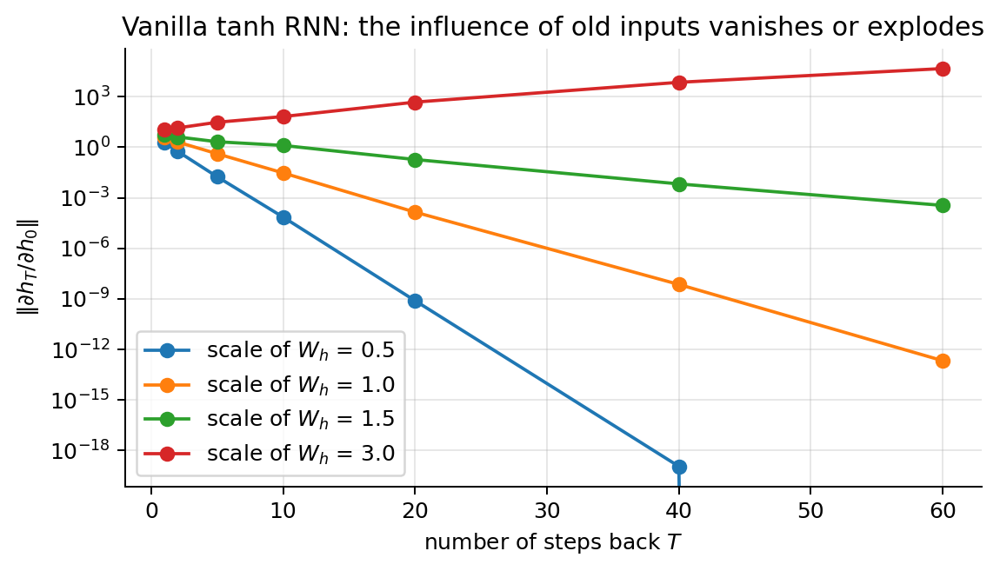
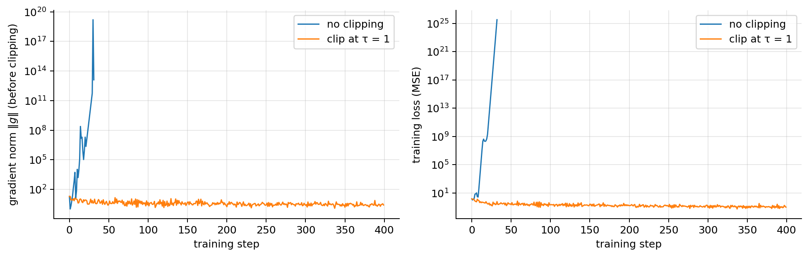
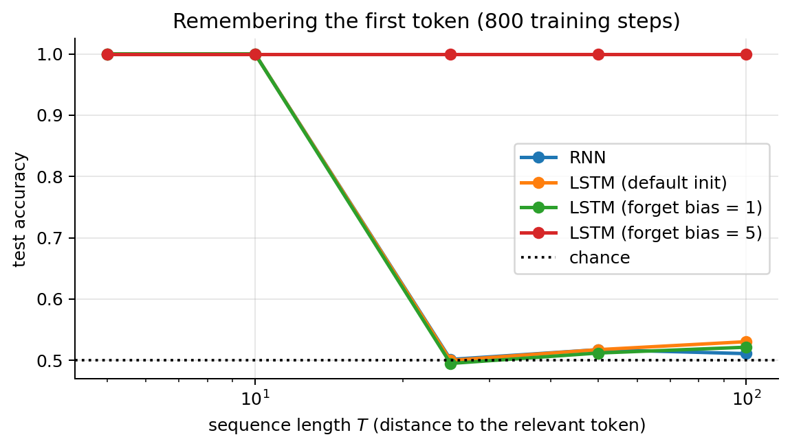
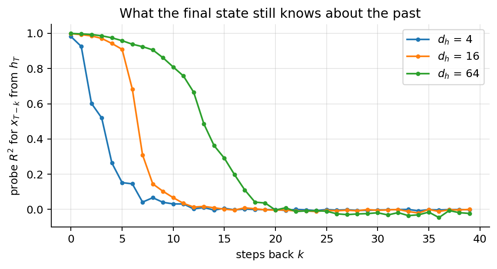
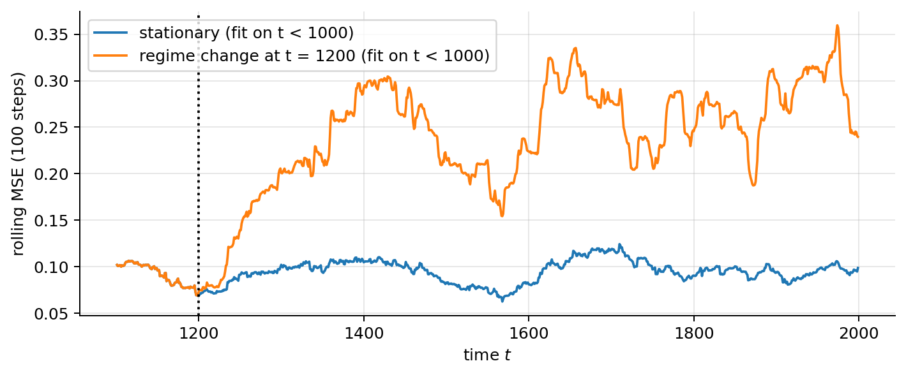
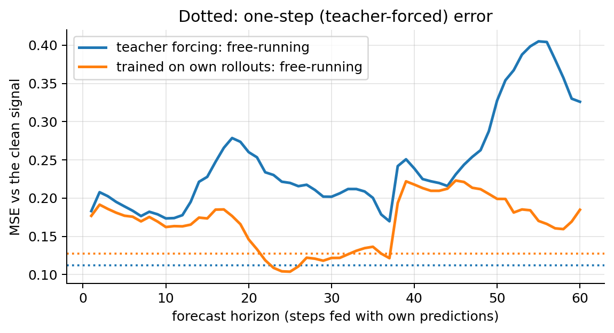

import numpy as np
import matplotlib.pyplot as plt
import torch, torch.nn as nn, torch.nn.functional as F
plt.rcParams.update({"figure.dpi": 90, "axes.grid": True, "grid.alpha": 0.3,
"axes.spines.top": False, "axes.spines.right": False})
rng = np.random.default_rng(0); torch.manual_seed(0); torch.set_num_threads(4)04 · Sequence Models: Embeddings, RNNs and LSTMs
What this note covers. How a neural network reads a sequence: text is turned into vectors (tokens, indices, embeddings), a recurrent neural network (RNN) reads them one step at a time while carrying a hidden state, and it is trained by backpropagation through time. We derive why plain RNNs forget (vanishing gradients) or blow up (exploding gradients), how gradient clipping fixes the second problem and how the LSTM and GRU fix the first, down to the full Jacobian of the LSTM memory. Then the practical side: padding, masking and packing, truncated BPTT, bidirectional and deep RNNs, the assumptions an RNN makes about your data (fixed-size memory, stationarity, no look-ahead, teacher forcing, closed vocabulary, input scale), how to check each one and what to do when it fails.
What you need. The MLP and the row convention \(\mathbf{Z}^{[l]} = \mathbf{A}^{[l-1]}\mathbf{W}^{[l]} + \mathbf{b}^{[l]}\) (NN note 00); backpropagation and the chain rule on a computational graph, including the fact that a weight used in several places receives the sum of the gradients from each use (NN note 01); Adam, dropout and gradient clipping as training tools (NN note 02); weight sharing and residual connections (NN note 03); softmax and cross-entropy (ML note 04); train/validation/test splits and cross-validation (ML note 00).
After this note you can write the RNN, LSTM and GRU equations and count their parameters; derive BPTT and the vanishing-gradient bound; explain, with the Jacobian, why the LSTM memory keeps gradients alive and why the forget-gate bias is initialised positive; clip gradients correctly; batch variable-length sequences without letting the padding change the result; and validate a sequence model without leaking the future.
Notation. A sequence has \(T\) steps; step \(t\) is a row vector \(\mathbf{x}_t\in\mathbb{R}^{1\times d}\) (with a batch of \(B\) sequences, \(\mathbf{X}_t\in\mathbb{R}^{B\times d}\)). The hidden state is \(\mathbf{h}_t\in\mathbb{R}^{1\times d_h}\). \(|V|\) is the vocabulary size, \(\odot\) the element-wise product, \(\sigma(z) = 1/(1+e^{-z})\) the sigmoid, \(\mathrm{diag}(\mathbf{v})\) the diagonal matrix with \(\mathbf{v}\) on the diagonal, and \(\lVert\cdot\rVert\) the Euclidean norm (spectral norm for matrices). For a vector function \(\mathbf{a}(\mathbf{b})\), the Jacobian \(\partial\mathbf{a}/\partial\mathbf{b}\) is the matrix with entries \(\partial a_i/\partial b_j\).
1. Sequences and why MLPs don’t fit
Text, audio, time series and event logs are sequences \(\mathbf{x}_1, \mathbf{x}_2, \dots, \mathbf{x}_T\):
| data | one step \(\mathbf{x}_t\) | task |
|---|---|---|
| text | a word (its embedding) | sentiment, translation, next word |
| speech | a 10 ms frame of audio features | transcription |
| finance | price and volume of one day | forecast tomorrow |
| machines | sensor readings each second | detect a failure |
| insurance | one event in a claim’s history (made-up example) | predict the claim’s final cost |
Four properties make an MLP a poor fit:
- Different lengths. An MLP needs a fixed-size input; reviews have 5 words or 500.
- Order matters. “not good, bad” ≠ “not bad, good”: same words, opposite meaning.
- Memory. What happened earlier affects what comes next, so the model needs a state.
- The same pattern can appear at any time step. An MLP would need separate weights for “word at position 3” and “word at position 30”, although a word means the same thing wherever it appears. We want to share weights across time, as a CNN shares them across space (NN note 03).
A recurrent network reads the sequence one step at a time, with the same weights at every step, and keeps a hidden state \(\mathbf{h}_t\) that summarises what it has read so far.
2. From text to vectors
2.1 Tokens and indices
- Tokenise: split the text into tokens (words, sub-words or characters).
- Index: map each token to an integer in a vocabulary of size \(|V|\), plus special tokens:
<PAD>to fill short sequences,<UNK>for unknown words,<START>to begin generation. - Embed: map each index to a dense vector \(\mathbf{x}_t = \mathbf{E}[\text{index}_t]\in\mathbb{R}^d\), where \(\mathbf{E}\in\mathbb{R}^{|V|\times d}\) is a learned embedding matrix (
nn.Embedding). A sentence of \(T\) tokens becomes a \(T\times d\) matrix, one row per time step: the input of an RNN.
2.2 An embedding is a lookup table
Each token id \(k\) owns one row \(\mathbf{e}_k\) of \(\mathbf{E}\). Write the token as a one-hot row vector \(\mathbf{o}_k\in\{0,1\}^{1\times|V|}\) (a single 1 in position \(k\)).
Claim. \(\mathbf{o}_k\mathbf{E} = \mathbf{E}_{k,:}\).
Proof. Entry \(j\) of the product is \((\mathbf{o}_k\mathbf{E})_j = \sum_{l=1}^{|V|}(\mathbf{o}_k)_l E_{lj}\) (definition of the matrix product). Every \((\mathbf{o}_k)_l\) is 0 except \((\mathbf{o}_k)_k = 1\), so the sum is \(E_{kj}\). This holds for every \(j\), so the product is row \(k\). \(\blacksquare\)
So “looking up a row” is exactly a dense layer without bias applied to the one-hot encoding, implemented without the huge sparse multiplication (in code, E[ids]). It is trained by backprop like any other weight. The gradient of the loss with respect to \(\mathbf{E}\) is \(\mathbf{o}_k^\top\,\partial J/\partial\mathbf{e}_k\) (the gradient of a linear layer, NN note 01), which is zero outside row \(k\): only the rows of the tokens present in the batch receive a gradient. nn.Embedding(|V|, d) takes \([B,T]\) integers and returns \([B,T,d]\) floats. Typical sizes: \(|V|\) = 10,000–50,000, \(d\) = 50–1,024.
V, d = 10, 4
E = nn.Embedding(V, d)
idx = torch.tensor([3, 7, 3])
onehot = F.one_hot(idx, V).float()
print("lookup E[idx] :\n", E(idx).detach().numpy().round(3))
print("one-hot @ E.weight :\n", (onehot @ E.weight).detach().numpy().round(3))
E(idx).sum().backward()
print("rows of E with a non-zero gradient:", E.weight.grad.abs().sum(1).nonzero().ravel().tolist())lookup E[idx] :
[[ 0.12 1.238 1.117 -0.247]
[-0.174 -0.679 0.938 0.489]
[ 0.12 1.238 1.117 -0.247]]
one-hot @ E.weight :
[[ 0.12 1.238 1.117 -0.247]
[-0.174 -0.679 0.938 0.489]
[ 0.12 1.238 1.117 -0.247]]
rows of E with a non-zero gradient: [3, 7]The two products agree, and after a backward pass only rows 3 and 7 (the tokens in the batch) have a gradient.
2.3 Why dense embeddings, and word2vec
One-hot vectors are huge (\(|V|\) is often \(10^4\)–\(10^5\)) and all equally far apart: \(\lVert\mathbf{o}_j - \mathbf{o}_k\rVert = \sqrt2\) for every pair \(j\ne k\), so “good” is as far from “great” as from “banana”. A dense embedding is small (\(d\ll|V|\)) and can place tokens used in similar contexts close together.
\(\mathbf{E}\) is learned either by the task itself (sentiment, translation…) or beforehand, with a target/context likelihood model:
- word2vec, skip-gram (Mikolov et al., 2013): for a centre word \(c\) and each word \(o\) in a window around it, maximise \(P(o\mid c) = \exp(\mathbf{u}_o'^\top\mathbf{u}_c)/\sum_{w\in V}\exp(\mathbf{u}_w'^\top\mathbf{u}_c)\), a softmax classifier (ML note 04) whose input is the centre word’s embedding \(\mathbf{u}_c\).
- word2vec, CBOW: predict the centre word from the average of its neighbours’ embeddings.
Words used in similar contexts get similar vectors, and some relations become directions: king − man + woman ≈ queen. The same idea gives embeddings for whole sentences and documents, the basis of semantic search and RAG (NN note 06, which also shows how negative sampling makes the sum over \(V\) affordable).
3. The recurrent neural network (RNN)
3.1 Read one word at a time, keep a summary
Like reading a sentence and keeping a mental note: after each word you update the note using the word and the previous note. The note is the hidden state \(\mathbf{h}_t\), a vector of, say, 128 numbers. The update rule (the “cell”) is the same at every step: one set of weights, any sentence length. At the end, \(\mathbf{h}_T\) summarises the whole review, and a dense layer turns it into “positive / negative”.
Try it. Press ▶ to read “the movie was not good” word by word. At “not” the state must remember that a negation is pending; at “good” it must turn “good” into “negative”.
3.2 The equations
\[ \mathbf{h}_t = g_1\big(\mathbf{x}_t\mathbf{W}_x + \mathbf{h}_{t-1}\mathbf{W}_h + \mathbf{b}_h\big), \qquad \mathbf{h}_0 = \mathbf{0}, \qquad\qquad \hat{\mathbf{y}}_t = g_2\big(\mathbf{h}_t\mathbf{W}_y + \mathbf{b}_y\big). \]
- \(\mathbf{x}_t\): the input at time \(t\) (e.g. the embedding of the \(t\)-th word). \(\hat{\mathbf{y}}_t\): the output at time \(t\) (e.g. “is this word a named entity?”).
- \(g_1\) is usually \(\tanh\); \(g_2\) is the output activation of the task (sigmoid, softmax or identity, NN note 00).
- The parameters \(\boldsymbol{\theta} = \{\mathbf{W}_x\in\mathbb{R}^{d\times d_h},\ \mathbf{W}_h\in\mathbb{R}^{d_h\times d_h},\ \mathbf{b}_h,\ \mathbf{W}_y,\ \mathbf{b}_y\}\) are shared by all time steps.
Unrolled over time, an RNN is a very deep feed-forward network, one layer per time step, whose layers share their weights.
3.3 Inside the cell
The cell is a dense layer with two inputs. Equivalently, concatenate them into one row \([\mathbf{h}_{t-1},\mathbf{x}_t]\in\mathbb{R}^{1\times(d_h+d)}\) and stack the weights:
\[ \mathbf{h}_t = \tanh\big([\mathbf{h}_{t-1},\mathbf{x}_t]\,\mathbf{W} + \mathbf{b}\big), \qquad \mathbf{W} = \begin{pmatrix}\mathbf{W}_h\\ \mathbf{W}_x\end{pmatrix}\in\mathbb{R}^{(d_h+d)\times d_h}, \]
because \([\mathbf{h}_{t-1},\mathbf{x}_t]\mathbf{W} = \mathbf{h}_{t-1}\mathbf{W}_h + \mathbf{x}_t\mathbf{W}_x\) (block matrix product).
| object | shape (batch of \(B\)) |
|---|---|
| \(\mathbf{X}_t\) (one step) | \(B\times d\) |
| \(\mathbf{H}_t\) | \(B\times d_h\) |
| \(\mathbf{W}_x\) | \(d\times d_h\) |
| \(\mathbf{W}_h\) | \(d_h\times d_h\) |
Parameters: \(d\,d_h + d_h^2 + d_h\), whatever the sequence length. With \(d = 100\), \(d_h = 128\): \(12{,}800 + 16{,}384 + 128 = 29{,}312\). PyTorch keeps two bias vectors (\(\mathbf{b}_{ih}\) and \(\mathbf{b}_{hh}\), whose sum plays the role of \(\mathbf{b}\)), so it reports \(29{,}440\).
rnn = nn.RNN(input_size=100, hidden_size=128, batch_first=True)
print(f"formula d*dh + dh^2 + dh = {100 * 128 + 128**2 + 128:,}; nn.RNN: {sum(p.numel() for p in rnn.parameters()):,}")
x = torch.randn(32, 20, 100) # B = 32 sequences of T = 20 steps, d = 100
out, h_T = rnn(x) # out: every h_t; h_T: the last one
print("out:", tuple(out.shape), " h_T:", tuple(h_T.shape), " out[:, -1] == h_T[0]:", torch.allclose(out[:, -1], h_T[0]))formula d*dh + dh^2 + dh = 29,312; nn.RNN: 29,440
out: (32, 20, 128) h_T: (1, 32, 128) out[:, -1] == h_T[0]: True3.4 An RNN with numbers
A one-number RNN: \(h_t = \tanh(1\cdot x_t + w_h\,h_{t-1})\), \(h_0 = 0\), input sequence \(1, 0, 0, -1, 0, 0\). With \(w_h = 0.5\):
- \(h_1 = \tanh(1 + 0.5\cdot0) = \tanh(1) = 0.76\): the input arrives.
- \(h_2 = \tanh(0 + 0.5\cdot0.76) = \tanh(0.38) = 0.36\): no input, the memory fades.
- \(h_3 = \tanh(0.5\cdot0.36) = 0.18\): fading further.
- \(h_4 = \tanh(-1 + 0.5\cdot0.18) = \tanh(-0.91) = -0.72\): the new input flips the sign.
- \(h_5 = -0.35\), \(h_6 = -0.17\): after two quiet steps about a quarter of it is left.
Each step without input multiplies the memory by at most 0.5 (because \(|\tanh(z)|\le|z|\), and \(\approx\) for small \(z\)): after 5 quiet steps, \(0.5^5\approx3\%\) of it is left. With \(w_h = 0.95\) the memory lasts much longer. With \(w_h>1\) the scalar map \(h\mapsto\tanh(w_h h)\) has two stable fixed points \(\pm h^*\) (for \(w_h = 1.5\), \(h^* = 0.86\)): the state no longer fades, but it is pulled back to the attractor, so after \(x = -1\) pushes it down to \(0.25\) it climbs back up (\(0.36\), \(0.50\)) and the sign of the last input is lost. Only a narrow range of \(w_h\) in between works: the core problem of plain RNNs. The same multiplication by \(w_h\) happens to the gradient going backward in time (section 5).
Try it. Step through the sequence with \(w_h = 0.5\), then move \(w_h\) to \(0.95\) and to values above 1.
def scalar_rnn(xs, w_h, w_x=1.0):
h, hs = 0.0, []
for x in xs:
h = np.tanh(w_x * x + w_h * h); hs.append(h)
return np.array(hs)
xs = [1, 0, 0, -1, 0, 0]
for w in [0.5, 0.95, 1.5]:
print(f"w_h = {w:<4}: h_1..h_6 =", scalar_rnn(xs, w).round(2))
h = 0.5
for _ in range(200): h = np.tanh(1.5 * h) # iterate to the fixed point
print(f"stable fixed point of h -> tanh(1.5 h): {h:.2f}")w_h = 0.5 : h_1..h_6 = [ 0.76 0.36 0.18 -0.72 -0.35 -0.17]
w_h = 0.95: h_1..h_6 = [ 0.76 0.62 0.53 -0.46 -0.41 -0.37]
w_h = 1.5 : h_1..h_6 = [0.76 0.82 0.84 0.25 0.36 0.5 ]
stable fixed point of h -> tanh(1.5 h): 0.863.5 Applications: input and output patterns
| Pattern | Example | How |
|---|---|---|
| one-to-many | music or text generation, image captioning | feed each output back as the next input |
| many-to-one | sentiment of a review (LSTM lab) | a head on the last state \(\mathbf{h}_T\) (or on a pooled summary) |
| many-to-many, same length | named-entity recognition, part-of-speech tagging, per-step forecasting | a head on every \(\mathbf{h}_t\) |
| many-to-many, different length | machine translation, speech-to-text | an encoder RNN reads everything, a decoder RNN writes (section 13) |
| language model | next-token prediction | softmax over \(|V|\) at every step, trained with cross-entropy |
4. Training: loss and backpropagation through time
4.1 The loss
The loss is summed over the time steps that have a target (for many-to-one, only the last one):
\[ L(\hat{\mathbf{y}},\mathbf{y}) = \sum_{t=1}^{T_y} L\big(\hat{\mathbf{y}}_t,\mathbf{y}_t\big), \]
with \(L(\hat{\mathbf{y}}_t,\mathbf{y}_t)\) the per-step loss of the task (cross-entropy for classification, squared error for regression). In practice it is averaged over steps and sequences, and the average must exclude padding (section 12).
4.2 Backpropagation through time (BPTT)
Unroll the network and run ordinary backprop on the unrolled graph. Write the pre-activation \(\mathbf{a}_t = \mathbf{x}_t\mathbf{W}_x + \mathbf{h}_{t-1}\mathbf{W}_h + \mathbf{b}\), so \(\mathbf{h}_t = \tanh(\mathbf{a}_t)\), and let \(\boldsymbol{\delta}_t = \partial L/\partial\mathbf{a}_t\) (a row vector, as in NN note 01).
- \(\mathbf{h}_t\) influences the loss in two ways: through the output at step \(t\), and through \(\mathbf{a}_{t+1} = \dots + \mathbf{h}_t\mathbf{W}_h\). By the multivariable chain rule the two contributions add: \[\frac{\partial L}{\partial\mathbf{h}_t} = \underbrace{\frac{\partial L_t}{\partial\mathbf{h}_t}}_{\text{output at }t} + \boldsymbol{\delta}_{t+1}\mathbf{W}_h^\top \qquad(\text{with }\boldsymbol{\delta}_{T+1} = \mathbf{0}).\]
- Through the element-wise tanh, \(\tanh'(a) = 1-\tanh^2(a)\): \[\boldsymbol{\delta}_t = \frac{\partial L}{\partial\mathbf{h}_t}\odot\big(1-\mathbf{h}_t^2\big).\]
- \(\mathbf{W}_h\) is used at every step. The loss depends on it through each \(\mathbf{a}_t\), so (chain rule, one term per use; the linear-layer gradient \(\partial L/\partial\mathbf{W} = \mathbf{A}^\top\boldsymbol{\delta}\) at each step): \[\frac{\partial L}{\partial\mathbf{W}_h} = \sum_{t=1}^{T}\mathbf{h}_{t-1}^\top\boldsymbol{\delta}_t, \qquad \frac{\partial L}{\partial\mathbf{W}_x} = \sum_{t=1}^{T}\mathbf{x}_t^\top\boldsymbol{\delta}_t, \qquad \frac{\partial L}{\partial\mathbf{b}} = \sum_{t=1}^{T}\boldsymbol{\delta}_t .\]
Shared weights ⇒ gradients add up, exactly the “add gate” of NN note 01. The code runs this recursion from scratch in numpy for a many-to-one RNN with squared-error loss and compares it with PyTorch’s autograd.
r = np.random.default_rng(0)
T, d, dh = 6, 3, 4
X = r.normal(size=(T, d)); Wx = 0.5 * r.normal(size=(d, dh)); Wh = 0.5 * r.normal(size=(dh, dh))
b = np.zeros(dh); w_out = r.normal(size=dh); y = 1.0
H = [np.zeros(dh)] # forward: H[t] = h_t, H[0] = h_0 = 0
for t in range(T): H.append(np.tanh(X[t] @ Wx + H[-1] @ Wh + b))
y_hat = H[-1] @ w_out # many-to-one head, L = (y_hat - y)^2 / 2
gWh, gWx, gb = np.zeros_like(Wh), np.zeros_like(Wx), np.zeros_like(b)
dL_dh = (y_hat - y) * w_out # step 1 at t = T (no delta_{T+1})
for t in range(T, 0, -1):
delta = dL_dh * (1 - H[t] ** 2) # step 2
gWh += np.outer(H[t - 1], delta); gWx += np.outer(X[t - 1], delta); gb += delta # step 3: sum over t
dL_dh = delta @ Wh.T # step 1 for h_{t-1} (no output there)
tWx, tWh, tb, tw = (torch.tensor(a, requires_grad=True) for a in (Wx, Wh, b, w_out))
h = torch.zeros(dh, dtype=torch.float64)
for t in range(T): h = torch.tanh(torch.tensor(X[t]) @ tWx + h @ tWh + tb)
(0.5 * (h @ tw - y) ** 2).backward()
print(f"max |BPTT by hand - autograd|: W_h {np.abs(gWh - tWh.grad.numpy()).max():.1e},"
f" W_x {np.abs(gWx - tWx.grad.numpy()).max():.1e}, b {np.abs(gb - tb.grad.numpy()).max():.1e}")max |BPTT by hand - autograd|: W_h 4.4e-16, W_x 1.8e-15, b 8.9e-16The differences are at the level of floating-point rounding: the recursion is exactly what autograd computes.
4.3 Advantages and drawbacks
| Advantages | Drawbacks |
|---|---|
| processes inputs of any length | computation is slow: step \(t\) waits for step \(t-1\) |
| model size doesn’t grow with the input length | difficult to access information from long ago (section 5) |
| each step takes the history into account | cannot use future inputs for the current state (unless bidirectional, section 11) |
| weights are shared across time | the whole history must fit in one fixed-size state (section 13) |
4.4 Truncated BPTT
Full BPTT stores every \(\mathbf{h}_t\) of the forward pass, so memory grows as \(O(T\,B\,d_h)\), and one update needs the whole sequence. For long streams (a year of sensor readings, a book) we use truncated BPTT: cut the sequence into chunks of \(K\) steps, carry the hidden state from one chunk to the next, but detach it, so the backward pass stops at the chunk boundary.
- Forward: information still flows across chunks, since \(\mathbf{h}\) is carried over.
- Backward: the gradient of a loss at step \(t\) reaches only the inputs of its own chunk. Dependencies longer than about \(K\) steps get no learning signal: the gradient is biased towards short dependencies.
- Cost: memory \(O(K\,B\,d_h)\) instead of \(O(T\,B\,d_h)\), and one update every \(K\) steps.
The code measures \(\partial(\text{output at } T)/\partial\mathbf{x}_t\) for \(T = 30\), with full BPTT and with \(K = 10\).
T, K = 30, 10
torch.manual_seed(0); rnn1 = nn.RNN(1, 16, batch_first=True)
x = torch.randn(1, T, 1, requires_grad=True)
def last_output(x, K=None):
h, outs = None, []
for s in range(0, T, K or T):
o, h = rnn1(x[:, s:s + (K or T)], h)
outs.append(o)
if K: h = h.detach() # truncated BPTT: no gradient across the boundary
return torch.cat(outs, 1)[0, -1].sum()
for K_ in [None, K]:
x.grad = None; last_output(x, K_).backward()
nz = (x.grad[0, :, 0] != 0).nonzero().ravel().tolist()
print(f"{'full BPTT' if K_ is None else f'truncated, K = {K_}':>18}: gradient reaches {len(nz)} inputs, x_{nz[0]+1} .. x_{nz[-1]+1}") full BPTT: gradient reaches 30 inputs, x_1 .. x_30
truncated, K = 10: gradient reaches 10 inputs, x_21 .. x_30With truncation, only the last chunk (\(\mathbf{x}_{21}\dots\mathbf{x}_{30}\)) receives a gradient, although the forward state was computed from all 30 inputs. In code: h = h.detach() between chunks. Choose \(K\) larger than the dependencies you need to learn (and check with a task where you know the dependency length, as in section 9.4).
5. Vanishing and exploding gradients
5.1 With one number per step
Take the scalar RNN \(h_t = \tanh(w\,h_{t-1} + u\,x_t)\). The chain rule for one step back:
\[ \frac{\partial h_t}{\partial h_{t-1}} = \underbrace{\big(1-h_t^2\big)}_{\tanh'}\cdot w . \]
Through \(T-k\) steps the factors multiply (chain rule along the only path from \(h_k\) to \(h_T\)):
\[ \frac{\partial h_T}{\partial h_k} = \prod_{t=k+1}^{T}\big(1-h_t^2\big)\,w = w^{\,T-k}\prod_{t=k+1}^{T}\big(1-h_t^2\big). \]
- \(0 < 1-h_t^2\le1\), so every step back multiplies the gradient by at most \(|w|\).
- \(|w|<1\): the signal from \(T-k\) steps back shrinks exponentially (vanishing). The network cannot learn long-range dependencies: the gradient never tells it they matter.
- \(|w|>1\): it can blow up (exploding), unless the units saturate (\(1-h_t^2\approx0\)). The fix is gradient clipping (section 6).
5.2 With vectors
From \(\mathbf{h}_t = \tanh(\mathbf{a}_t)\) and \(\mathbf{a}_t = \dots + \mathbf{h}_{t-1}\mathbf{W}_h\): the Jacobian of \(\mathbf{a}_t\) with respect to \(\mathbf{h}_{t-1}\) is \(\mathbf{W}_h^\top\) (entry \((i,j)\) is \(\partial a_{t,i}/\partial h_{t-1,j} = (W_h)_{ji}\)), and the tanh contributes a diagonal matrix, so
\[ \frac{\partial\mathbf{h}_t}{\partial\mathbf{h}_{t-1}} = \mathrm{diag}\big(1-\mathbf{h}_t^2\big)\,\mathbf{W}_h^\top . \]
For a loss that depends on \(\mathbf{h}_T\), the chain rule through the \(T-k\) steps gives (row gradient times Jacobians, from step \(T\) back to step \(k+1\)):
\[ \frac{\partial J}{\partial\mathbf{h}_k} = \frac{\partial J}{\partial\mathbf{h}_T}\;\frac{\partial\mathbf{h}_T}{\partial\mathbf{h}_{T-1}}\cdots\frac{\partial\mathbf{h}_{k+1}}{\partial\mathbf{h}_k} = \frac{\partial J}{\partial\mathbf{h}_T}\prod_{t=T}^{k+1}\mathrm{diag}\big(1-\mathbf{h}_t^2\big)\mathbf{W}_h^\top . \]
Take norms. The norm of a product is at most the product of the norms; \(\lVert\mathrm{diag}(1-\mathbf{h}_t^2)\rVert = \max_i(1-h_{t,i}^2)\le1\); and \(\lVert\mathbf{W}_h^\top\rVert = \lVert\mathbf{W}_h\rVert\). Therefore
\[ \Big\lVert\frac{\partial J}{\partial\mathbf{h}_k}\Big\rVert \le \Big\lVert\frac{\partial J}{\partial\mathbf{h}_T}\Big\rVert\;\lVert\mathbf{W}_h\rVert^{\,T-k}. \]
If \(\lVert\mathbf{W}_h\rVert<1\) the signal from \(T-k\) steps back shrinks exponentially: vanishing gradients (Bengio, Simard & Frasconi, 1994). The bound says nothing when \(\lVert\mathbf{W}_h\rVert>1\); then, if the units are not saturated, the product can grow exponentially: exploding gradients. The same analysis for depth instead of time is in NN note 01; an RNN is a deep network with \(T\) layers and the same matrix in each, which makes it worse: the factors cannot compensate each other.
# Norm of d h_T / d h_0 for a random tanh RNN, as a function of T and of the scale of W_h
def jac_norm(T, scale, dh=32, seed=0):
g = torch.Generator().manual_seed(seed)
Wh = torch.randn(dh, dh, generator=g) * scale / np.sqrt(dh) # spectral radius ~ scale
Wx = torch.randn(8, dh, generator=g) / np.sqrt(8)
xs = torch.randn(T, 1, 8, generator=g) # random inputs x_1..x_T
def run(h):
for t in range(T):
h = torch.tanh(xs[t] @ Wx + h @ Wh)
return h
return torch.autograd.functional.jacobian(run, torch.zeros(1, dh)).norm().item()
Ts = [1, 2, 5, 10, 20, 40, 60]
plt.figure(figsize=(6.5, 3.8))
for scale in [0.5, 1.0, 1.5, 3.0]:
plt.plot(Ts, [jac_norm(T, scale) for T in Ts], "o-", label=f"scale of $W_h$ = {scale}")
plt.yscale("log"); plt.xlabel("number of steps back $T$"); plt.ylabel(r"$\|\partial h_T/\partial h_0\|$")
plt.title("Vanilla tanh RNN: the influence of old inputs vanishes or explodes"); plt.legend(); plt.tight_layout(); plt.show()
print("norm at T = 40 and T = 60:", " ".join(f"scale {s}: {jac_norm(40, s):.1e}, {jac_norm(60, s):.1e}" for s in [0.5, 1.0, 1.5, 3.0]))
norm at T = 40 and T = 60: scale 0.5: 1.1e-19, 0.0e+00 scale 1.0: 7.2e-09, 2.1e-13 scale 1.5: 6.7e-03, 3.5e-04 scale 3.0: 7.2e+03, 4.7e+04Both failure modes appear. With small recurrent weights the influence of \(\mathbf{h}_0\) on \(\mathbf{h}_T\) vanishes exponentially (for scale 0.5 it underflows to 0 before \(T=60\)). With large weights it explodes exponentially. Saturation of the tanh units (\(1-h_t^2\approx0\)) slows the explosion but doesn’t stop it here. Only a narrow range in between keeps the signal roughly constant, and training cannot be expected to stay there. That is why gating (sections 7–9) and gradient clipping (section 6) are needed.
5.3 How fast does the signal fade?
Plain RNN: each step back multiplies the gradient by roughly \(\lVert\mathbf{W}_h\rVert\cdot\tanh'\). LSTM (section 9): along its memory path, only by the forget gate \(f\).
- RNN factor 0.8, 50 steps: \(0.8^{50}\approx1.4\times10^{-5}\).
- LSTM with \(f = 0.98\): \(0.98^{50}\approx0.36\).
Try it. The red curve is the RNN factor raised to the number of steps, the blue one the forget gate. Start at 0.8 and 0.98 (read-outs \(1.4\times10^{-5}\) and \(0.36\) at 50 steps); set the RNN factor to 1.1 and it explodes (\(1.1^{50}\approx117\)); an LSTM with \(f = 0.99\) keeps \(0.99^{50} = 60\%\) after 50 steps, an RNN with factor 0.9 only \(0.9^{50} = 0.5\%\).
for name, factor in [("RNN, factor 0.8", 0.8), ("RNN, factor 0.9", 0.9), ("RNN, factor 1.1", 1.1),
("LSTM, f = 0.98", 0.98), ("LSTM, f = 0.99", 0.99)]:
print(f"{name:>16}: factor^50 = {factor**50:.2g}") RNN, factor 0.8: factor^50 = 1.4e-05
RNN, factor 0.9: factor^50 = 0.0052
RNN, factor 1.1: factor^50 = 1.2e+02
LSTM, f = 0.98: factor^50 = 0.36
LSTM, f = 0.99: factor^50 = 0.61Exploding gradients have a cheap fix: clip the gradient norm (next section). Vanishing ones need a new architecture.
6. Exploding gradients and clipping by norm
Symptom. Training goes well, then the loss jumps by orders of magnitude or becomes nan. The recurrent loss surface has cliffs (Pascanu, Mikolov & Bengio, 2013): regions where a tiny change of \(\mathbf{W}_h\) changes \(\mathbf{h}_T\) enormously, because the product of section 5.2 is large. There the gradient \(\mathbf{g} = \nabla_{\boldsymbol{\theta}}J\) is huge, and the step \(-\alpha\mathbf{g}\) throws the parameters far away, into a region where the loss is worse and the gradients may be larger still.
Clipping by norm. Before the update, rescale the gradient if its norm exceeds a threshold \(\tau\):
\[ \mathbf{g}\;\leftarrow\;\mathbf{g}\cdot\min\Big(1,\ \frac{\tau}{\lVert\mathbf{g}\rVert}\Big), \qquad \lVert\mathbf{g}\rVert = \sqrt{\textstyle\sum_{\text{all parameters}}g_j^2}. \]
It preserves the direction. If \(\lVert\mathbf{g}\rVert\le\tau\) nothing changes. Otherwise the new gradient is \(c\,\mathbf{g}\) with \(c = \tau/\lVert\mathbf{g}\rVert > 0\):
- it points in the same direction (\(c>0\)), so it is still a descent direction: \(-\alpha\,c\,\mathbf{g}\cdot\mathbf{g} = -\alpha c\lVert\mathbf{g}\rVert^2<0\) (first-order decrease of \(J\));
- its length is \(c\lVert\mathbf{g}\rVert = \tau\).
So clipping only caps the step length at \(\alpha\tau\) and never changes where we are going.
Clipping by value (clamping each component to \([-\tau,\tau]\)) does change the direction: \(\mathbf{g} = (10, 0.1)\) clamped to \([-1,1]\) becomes \((1, 0.1)\), and its angle to the first axis goes from \(\arctan(0.1/10) = 0.57°\) to \(\arctan(0.1/1) = 5.7°\). The norm is computed over all parameters together (a global norm), which keeps the relative size of the parameter groups.
In PyTorch: nn.utils.clip_grad_norm_(model.parameters(), max_norm=1.0) after loss.backward() and before opt.step(). It returns the norm before clipping: log it, it is the best early warning of exploding gradients. A good \(\tau\) is somewhat above the typical norm observed early in training; 1.0 is the usual default for RNNs.
Demo. A vanilla RNN (\(d_h = 32\), recurrent weights initialised with spectral scale 1.5) must remember the first of 30 random inputs; plain SGD with \(\alpha = 0.1\), 400 steps, the same seed and data for both runs, with and without clipping at \(\tau = 1\).
def train_clip(clip, lr=0.1, steps=400, T=30, scale=1.5, seed=0):
torch.manual_seed(seed); g = torch.Generator().manual_seed(seed)
rnn = nn.RNN(1, 32, batch_first=True); head = nn.Linear(32, 1)
with torch.no_grad(): rnn.weight_hh_l0.copy_(torch.randn(32, 32, generator=g) * scale / np.sqrt(32))
params = list(rnn.parameters()) + list(head.parameters()); opt = torch.optim.SGD(params, lr=lr)
norms, losses = [], []
for _ in range(steps):
x = torch.randn(64, T, 1, generator=g); y = x[:, 0] # target: the first input
loss = F.mse_loss(head(rnn(x)[0][:, -1]), y)
opt.zero_grad(); loss.backward()
norms.append(nn.utils.clip_grad_norm_(params, clip).item()) # returns the norm BEFORE clipping
losses.append(loss.item()); opt.step()
return np.array(norms), np.array(losses)
runs = {"no clipping": train_clip(float("inf")), "clip at τ = 1": train_clip(1.0)}
fig, axes = plt.subplots(1, 2, figsize=(11, 3.6))
for name, (nrm, ls) in runs.items():
axes[0].plot(nrm, lw=1.2, label=name); axes[1].plot(ls, lw=1.2, label=name)
axes[0].set_yscale("log"); axes[0].set_ylabel(r"gradient norm $\|g\|$ (before clipping)")
axes[1].set_yscale("log"); axes[1].set_ylabel("training loss (MSE)")
for ax in axes: ax.set_xlabel("training step"); ax.legend()
plt.tight_layout(); plt.show()
nrm, ls = runs["no clipping"]; first_bad = int(np.argmax(~np.isfinite(ls)))
print(f"no clipping : loss becomes non-finite at step {first_bad}; largest finite gradient norm {nrm[np.isfinite(nrm)].max():.1e}")
nrm, ls = runs["clip at τ = 1"]
print(f"clip at τ=1 : mean loss over the last 50 steps {ls[-50:].mean():.3f} (variance of the target = 1);"
f" median raw norm {np.median(nrm):.1f}, largest {nrm.max():.1f}")
no clipping : loss becomes non-finite at step 33; largest finite gradient norm 1.6e+19
clip at τ=1 : mean loss over the last 50 steps 0.114 (variance of the target = 1); median raw norm 3.4, largest 19.3Without clipping, a few steps with gradient norms in the hundreds and thousands throw the weights into a region where the norms keep growing, and within a few dozen steps the loss is not a number. With clipping, the same large raw gradients still occur (left panel), but each step is at most \(\alpha\tau = 0.1\) long, and the network learns the task: the loss falls from about 1 (predicting 0 for a unit-variance target) to about 0.1. Here the raw norm exceeds \(\tau = 1\) at every step (median 3.4), so clipping acts as normalised gradient descent; with Adam the effect is similar, since Adam divides by a running gradient scale (NN note 02), but a single huge gradient still distorts its moment estimates, so clipping remains standard.
Remedies for exploding gradients, in order: clip by norm (always, for RNNs); lower the learning rate; initialise \(\mathbf{W}_h\) with spectral radius \(\le1\) (e.g. orthogonal initialisation, nn.init.orthogonal_); use gated cells (LSTM/GRU), whose memory path has no weight matrix.
7. Gates
To remedy vanishing gradients, several kinds of gate have been designed, each with its own purpose but all with the same structure:
\[ \Gamma = \sigma\big(\mathbf{x}_t\mathbf{W} + \mathbf{h}_{t-1}\mathbf{U} + \mathbf{b}\big)\in(0,1)^{d_h}. \]
A gate is a sigmoid: a soft switch between 0 (block) and 1 (let through), applied by element-wise multiplication to a signal. Each gate has its own weights \(\mathbf{W}, \mathbf{U}, \mathbf{b}\) and looks at the current input and the previous state to decide. In the figure, the gate pre-activations \(z = (4, -4, 0, 2)\) give \(\sigma(z) = (0.98, 0.02, 0.50, 0.88)\): the first component is let through, the second blocked, the third halved.
| Gate | Role | Used in |
|---|---|---|
| update gate \(\Gamma_u\) | how much should the past matter now? | GRU |
| relevance / reset gate \(\Gamma_r\) | drop previous information? | GRU |
| forget gate \(\Gamma_f = \mathbf{f}_t\) | erase a memory cell or not? | LSTM |
| input gate \(\Gamma_i = \mathbf{i}_t\) | write new content into memory? | LSTM |
| output gate \(\Gamma_o = \mathbf{o}_t\) | how much to reveal of a cell? | LSTM |
Analogy: a paper notebook (the cell state) with three rules: what to erase (forget), what to write (input), what to read aloud (output).
8. The LSTM
8.1 The cell
The Long Short-Term Memory (Hochreiter & Schmidhuber, 1997; the forget gate was added by Gers, Schmidhuber & Cummins, 2000) adds a cell state \(\mathbf{c}_t\), a memory that is updated additively and controlled by gates. With \([\mathbf{h}_{t-1}, \mathbf{x}_t]\) the concatenation:
\[ \begin{aligned} \mathbf{f}_t &= \sigma\big([\mathbf{h}_{t-1},\mathbf{x}_t]\mathbf{W}_f + \mathbf{b}_f\big) \\ &\quad\small \text{forget gate: how much old memory to keep}\\ \mathbf{i}_t &= \sigma\big([\mathbf{h}_{t-1},\mathbf{x}_t]\mathbf{W}_i + \mathbf{b}_i\big) \\ &\quad\small \text{input gate: how much new content to write}\\ \tilde{\mathbf{c}}_t &= \tanh\big([\mathbf{h}_{t-1},\mathbf{x}_t]\mathbf{W}_c + \mathbf{b}_c\big) \\ &\quad\small \text{candidate content}\\ \mathbf{c}_t &= \mathbf{f}_t\odot\mathbf{c}_{t-1} + \mathbf{i}_t\odot\tilde{\mathbf{c}}_t \\ &\quad\small \text{memory update (additive)}\\ \mathbf{o}_t &= \sigma\big([\mathbf{h}_{t-1},\mathbf{x}_t]\mathbf{W}_o + \mathbf{b}_o\big) \\ &\quad\small \text{output gate: how much memory to expose}\\ \mathbf{h}_t &= \mathbf{o}_t\odot\tanh(\mathbf{c}_t) \end{aligned} \]
Two states travel along time: the cell \(\mathbf{c}_t\) (long-term memory) and the hidden state \(\mathbf{h}_t\) (what is shown to the next layer and to the next step). The memory update is a sum, not a product through a squashing function.
8.2 One gate at a time
Try it. Press ▶ to follow one update through the cell; the text under the figure explains each stage.
8.3 One LSTM step, with numbers
One memory cell with old value \(c_{t-1} = 0.8\). The gates (computed from \(\mathbf{h}_{t-1}\) and \(\mathbf{x}_t\)) came out as \(f = 0.9\), \(i = 0.3\), \(o = 0.7\), and the candidate is \(\tilde c = -0.5\).
\[ \begin{aligned} c_t &= f\,c_{t-1} + i\,\tilde c \\ &\quad\small \text{memory update}\\ &= 0.9\cdot0.8 + 0.3\cdot(-0.5) \\ &\quad\small \text{substitute}\\ &= 0.72 - 0.15 = 0.57, \\ &\quad\small \text{keep 90 \% of the old, write 30 \% of the candidate}\\ h_t &= o\tanh(c_t) = 0.7\cdot\tanh(0.57) = 0.7\cdot0.515 = 0.36. \\ &\quad\small \text{show 70 \% of the squashed memory} \end{aligned} \]
The memory is mostly kept and slightly corrected. With \(f = 1\), \(i = 0\) it would be copied unchanged, for as many steps as needed.
The same step in nn.LSTMCell: set all weights to zero and choose the biases so that the gates take exactly these values (PyTorch orders the four blocks as input, forget, candidate, output).
logit = lambda p: np.log(p / (1 - p))
cell = nn.LSTMCell(input_size=1, hidden_size=1)
with torch.no_grad():
cell.weight_ih.zero_(); cell.weight_hh.zero_(); cell.bias_hh.zero_()
cell.bias_ih.copy_(torch.tensor([logit(0.3), logit(0.9), np.arctanh(-0.5), logit(0.7)])) # i, f, c~, o
h_t, c_t = cell(torch.zeros(1, 1), (torch.zeros(1, 1), torch.tensor([[0.8]])))
print(f"c_t = {c_t.item():.3f} h_t = {h_t.item():.3f} (by hand: 0.57 and 0.7*tanh(0.57) = {0.7 * np.tanh(0.57):.3f})")c_t = 0.570 h_t = 0.361 (by hand: 0.57 and 0.7*tanh(0.57) = 0.361)8.4 The LSTM reading a sentence
“The cat, which ate a lot, was sleepy”: to choose was rather than were, the network must remember that the subject is singular across a whole sub-clause. The gate values in the figure are illustrative (a trained LSTM learns this kind of behaviour, spread over many cells), but the memory is computed from them with the update rule of section 8.1.
Try it. Press ▶. At “cat” the input gate opens (\(i = 0.95\)) and writes the candidate \(+1\): \(c = 0.9\cdot0 + 0.95\cdot1 = 0.95\). Through the sub-clause \(f\approx0.95\)–\(0.97\) and \(i\approx0\), so the memory decays only slowly (0.72 when “was” arrives) while the output gate stays near 0.1 (the memory is hidden, \(h\approx0.07\)). At “was” the output gate opens (\(o = 0.95\)): \(h = 0.95\tanh(0.72) = 0.59\), the network “reads aloud” singular. At “sleepy” the forget gate closes (\(f = 0.2\)) and new content is written: \(c = 0.2\cdot0.72 + 0.8\cdot(-0.5) = -0.26\).
f_ = [0.1, 0.9, 0.95, 0.97, 0.96, 0.97, 0.97, 0.96, 0.95, 0.2]; i_ = [0.1, 0.95, 0.05, 0.05, 0.1, 0.02, 0.05, 0.02, 0.05, 0.8]
o_ = [0.1, 0.2, 0.1, 0.1, 0.1, 0.1, 0.1, 0.2, 0.95, 0.3]; cand = [0, 1, 0, 0, 0, 0, 0, 0, 0, -0.5] # the widget's values
words = "The cat , which ate a lot , was sleepy".split()
c = 0.0
for w, f, i, o, ct in zip(words, f_, i_, o_, cand):
c = f * c + i * ct
print(f"{w:>7}: c = {c:+.2f} h = o*tanh(c) = {o * np.tanh(c):+.2f}") The: c = +0.00 h = o*tanh(c) = +0.00
cat: c = +0.95 h = o*tanh(c) = +0.15
,: c = +0.90 h = o*tanh(c) = +0.07
which: c = +0.88 h = o*tanh(c) = +0.07
ate: c = +0.84 h = o*tanh(c) = +0.07
a: c = +0.82 h = o*tanh(c) = +0.07
lot: c = +0.79 h = o*tanh(c) = +0.07
,: c = +0.76 h = o*tanh(c) = +0.13
was: c = +0.72 h = o*tanh(c) = +0.59
sleepy: c = -0.26 h = o*tanh(c) = -0.088.5 Parameters
Four gate blocks, each with a \((d_h + d)\times d_h\) matrix and a bias: \(4\big(d_h(d_h + d) + d_h\big)\). With \(d = 100\), \(d_h = 128\): \(4\cdot29{,}312 = 117{,}248\); PyTorch’s two bias vectors per block add \(4d_h = 512\), giving \(117{,}760\) (four times the RNN of section 3.3).
9. Why the gradient survives in an LSTM
9.1 The full Jacobian of the memory
Split each gate’s weight matrix into the block that multiplies \(\mathbf{h}_{t-1}\) and the block that multiplies \(\mathbf{x}_t\): \(\mathbf{W}_f = \begin{pmatrix}\mathbf{W}_{fh}\\ \mathbf{W}_{fx}\end{pmatrix}\), and the same for \(i\), \(c\), \(o\). Then \(\mathbf{f}_t = \sigma(\mathbf{h}_{t-1}\mathbf{W}_{fh} + \mathbf{x}_t\mathbf{W}_{fx} + \mathbf{b}_f)\).
\(\mathbf{c}_t\) depends on \(\mathbf{c}_{t-1}\) directly (the term \(\mathbf{f}_t\odot\mathbf{c}_{t-1}\)) and indirectly, because the gates and the candidate depend on \(\mathbf{h}_{t-1} = \mathbf{o}_{t-1}\odot\tanh(\mathbf{c}_{t-1})\). Differentiate \(\mathbf{c}_t = \mathbf{f}_t\odot\mathbf{c}_{t-1} + \mathbf{i}_t\odot\tilde{\mathbf{c}}_t\) step by step:
- Product rule on each element-wise product (\(\partial(\mathbf{u}\odot\mathbf{v}) = \mathrm{diag}(\mathbf{v})\,\partial\mathbf{u} + \mathrm{diag}(\mathbf{u})\,\partial\mathbf{v}\)): \[\frac{\partial\mathbf{c}_t}{\partial\mathbf{c}_{t-1}} = \mathrm{diag}(\mathbf{f}_t) + \mathrm{diag}(\mathbf{c}_{t-1})\frac{\partial\mathbf{f}_t}{\partial\mathbf{c}_{t-1}} + \mathrm{diag}(\tilde{\mathbf{c}}_t)\frac{\partial\mathbf{i}_t}{\partial\mathbf{c}_{t-1}} + \mathrm{diag}(\mathbf{i}_t)\frac{\partial\tilde{\mathbf{c}}_t}{\partial\mathbf{c}_{t-1}}.\]
- Each gate depends on \(\mathbf{c}_{t-1}\) only through \(\mathbf{h}_{t-1}\) (chain rule): \(\dfrac{\partial\mathbf{f}_t}{\partial\mathbf{c}_{t-1}} = \dfrac{\partial\mathbf{f}_t}{\partial\mathbf{h}_{t-1}}\,\dfrac{\partial\mathbf{h}_{t-1}}{\partial\mathbf{c}_{t-1}}\), and the same for \(\mathbf{i}_t\) and \(\tilde{\mathbf{c}}_t\).
- Through a sigmoid, \(\sigma' = \sigma(1-\sigma)\), and the linear map gives the transposed block (as in section 5.2): \(\dfrac{\partial\mathbf{f}_t}{\partial\mathbf{h}_{t-1}} = \mathrm{diag}\big(\mathbf{f}_t\odot(1-\mathbf{f}_t)\big)\mathbf{W}_{fh}^\top\); likewise for \(\mathbf{i}_t\); for the candidate, \(\tanh' = 1-\tanh^2\) gives \(\mathrm{diag}(1-\tilde{\mathbf{c}}_t^2)\mathbf{W}_{ch}^\top\).
- \(\mathbf{o}_{t-1}\) was computed from \(\mathbf{h}_{t-2}\) and \(\mathbf{x}_{t-1}\), not from \(\mathbf{c}_{t-1}\), so \(\dfrac{\partial\mathbf{h}_{t-1}}{\partial\mathbf{c}_{t-1}} = \mathrm{diag}\big(\mathbf{o}_{t-1}\odot(1-\tanh^2\mathbf{c}_{t-1})\big)\).
Collecting the terms:
\[ \boxed{\begin{aligned} \frac{\partial\mathbf{c}_t}{\partial\mathbf{c}_{t-1}} &= \underbrace{\mathrm{diag}(\mathbf{f}_t)}_{\text{direct path}} \\ &\quad + \Big[\mathrm{diag}\big(\mathbf{c}_{t-1}\odot\mathbf{f}_t\odot(1-\mathbf{f}_t)\big)\mathbf{W}_{fh}^\top \\ &\qquad\ + \mathrm{diag}\big(\tilde{\mathbf{c}}_t\odot\mathbf{i}_t\odot(1-\mathbf{i}_t)\big)\mathbf{W}_{ih}^\top \\ &\qquad\ + \mathrm{diag}\big(\mathbf{i}_t\odot(1-\tilde{\mathbf{c}}_t^2)\big)\mathbf{W}_{ch}^\top\Big]\mathrm{diag}\big(\mathbf{o}_{t-1}\odot(1-\tanh^2\mathbf{c}_{t-1})\big) \\ &\qquad \text{(the bracket: indirect paths through the gates, via }\mathbf{h}_{t-1}\text{)} \end{aligned}} \]
Why the direct path dominates when \(\mathbf{f}\approx\mathbf{1}\).
- The direct term is \(\mathrm{diag}(\mathbf{f}_t)\approx\mathbf{I}\): every eigenvalue is close to 1, whatever the weights are. No weight matrix, no squashing derivative.
- The forget-gate part of the indirect term carries the factor \(\mathbf{f}_t\odot(1-\mathbf{f}_t)\), which tends to 0 as \(\mathbf{f}_t\to\mathbf{1}\) (a saturated sigmoid has zero slope).
- The other two indirect terms carry \(\sigma'\le\tfrac14\) or \(\tanh'\le1\), the factor \(\mathbf{o}_{t-1}\odot\tanh'(\mathbf{c}_{t-1})\le1\), and a weight matrix: they have the form of one step of the vanilla-RNN Jacobian of section 5.2, \(\mathrm{diag}(\cdot)\mathbf{W}^\top\).
So each step’s Jacobian is \(\mathbf{J}_t = \mathbf{D}_t + \mathbf{E}_t\), with \(\mathbf{D}_t = \mathrm{diag}(\mathbf{f}_t)\approx\mathbf{I}\) and \(\mathbf{E}_t\) an RNN-like term. Over many steps, \(\partial\mathbf{c}_T/\partial\mathbf{c}_k = \mathbf{J}_T\cdots\mathbf{J}_{k+1}\). Expand the product: it is a sum over paths, each choosing \(\mathbf{D}\) or \(\mathbf{E}\) at every step. The all-direct path contributes \(\prod_t\mathrm{diag}(\mathbf{f}_t)\approx\mathbf{I}\); a path that uses \(\mathbf{E}\) at \(m\) steps behaves like an \(m\)-step RNN path, but rides on the near-identity highway for the other steps. For a vanilla RNN, every path goes through a weight matrix and a squashing derivative at every step; that is the whole difference. (The original 1997 LSTM even truncated the gradient through the gates, keeping only the direct path: the “constant error carousel”.)
This is the same idea as the residual connection \(\mathbf{y} = \mathbf{x} + F(\mathbf{x})\) of NN note 03: an additive path with a near-identity Jacobian.
9.2 Checking it numerically
The code builds one LSTM step as a function of \(\mathbf{c}_{t-1}\) (with \(\mathbf{h}_{t-1} = \mathbf{o}_{t-1}\odot\tanh(\mathbf{c}_{t-1})\)), gets its exact Jacobian from autograd, and compares it with the boxed formula. Then it measures, for forget-gate biases 0, 1 and 5, the size of the direct and indirect terms and of the whole product over 10, 25 and 50 steps, next to a vanilla RNN of the same size.
def lstm_cell(fb, seed=0, d=8, dh=16):
torch.manual_seed(seed); cell = nn.LSTMCell(d, dh)
with torch.no_grad(): cell.bias_ih[dh:2 * dh].fill_(fb); cell.bias_hh[dh:2 * dh].fill_(0) # forget-gate bias
return cell
def one_step_jacobian(fb, d=8, dh=16):
cell = lstm_cell(fb, d=d, dh=dh); g = torch.Generator().manual_seed(1)
x, c_prev, o_prev = torch.randn(1, d, generator=g), torch.randn(1, dh, generator=g), torch.rand(1, dh, generator=g)
step = lambda c: cell(x, (o_prev * torch.tanh(c), c))[1] # c_{t-1} -> c_t
J = torch.autograd.functional.jacobian(step, c_prev)[0, :, 0, :] # exact (dh x dh)
with torch.no_grad(): # the boxed formula
h = o_prev * torch.tanh(c_prev)
zi, zf, zc, _ = (x @ cell.weight_ih.T + cell.bias_ih + h @ cell.weight_hh.T + cell.bias_hh).chunk(4, 1)
i, f, ct = torch.sigmoid(zi), torch.sigmoid(zf), torch.tanh(zc)
Wih_T, Wfh_T, Wch_T, _ = cell.weight_hh.chunk(4, 0) # PyTorch stores W_{.h}^T
D = torch.diag(f[0])
Ind = (torch.diag((c_prev * f * (1 - f))[0]) @ Wfh_T + torch.diag((ct * i * (1 - i))[0]) @ Wih_T
+ torch.diag((i * (1 - ct**2))[0]) @ Wch_T) @ torch.diag((o_prev * (1 - torch.tanh(c_prev)**2))[0])
return J, D, Ind
def chain_norm(T, fb=None, d=8, dh=16):
g = torch.Generator().manual_seed(1); xs = torch.randn(T, 1, d, generator=g)
if fb is None: # vanilla RNN: d h_T / d h_1
torch.manual_seed(0); cell = nn.RNNCell(d, dh)
def run(h):
for t in range(1, T): h = cell(xs[t], h)
return h
else: # LSTM: d c_T / d c_1
cell = lstm_cell(fb, d=d, dh=dh); o1 = torch.rand(1, dh, generator=g)
def run(c):
h = o1 * torch.tanh(c)
for t in range(1, T): h, c = cell(xs[t], (h, c))
return c
state1 = torch.randn(1, dh, generator=g)
J = torch.autograd.functional.jacobian(run, state1)[0, :, 0, :]
if fb is None: return torch.linalg.matrix_norm(J, 2).item(), float("nan")
with torch.no_grad(): # the all-direct path: prod_t diag(f_t)
c, h, prod_f = state1, o1 * torch.tanh(state1), torch.ones(dh)
for t in range(1, T):
z = xs[t] @ cell.weight_ih.T + cell.bias_ih + h @ cell.weight_hh.T + cell.bias_hh
prod_f *= torch.sigmoid(z.chunk(4, 1)[1][0]); h, c = cell(xs[t], (h, c))
return torch.linalg.matrix_norm(J, 2).item(), prod_f.max().item()
for fb in [0.0, 1.0, 5.0]:
J, D, Ind = one_step_jacobian(fb)
print(f"forget bias {fb}: |formula - autograd| = {(J - D - Ind).abs().max():.1e}; mean f = {D.diag().mean():.2f};"
f" ||direct|| = {torch.linalg.matrix_norm(D, 2):.2f}, ||indirect|| = {torch.linalg.matrix_norm(Ind, 2):.2f}")
print()
for name, fb in [("vanilla RNN", None), ("LSTM, forget bias 0", 0.0), ("LSTM, forget bias 1", 1.0), ("LSTM, forget bias 5", 5.0)]:
full, direct = zip(*(chain_norm(T, fb) for T in [10, 25, 50]))
print(f"{name:>20}: ||d state_T / d state_1|| for T = 10, 25, 50:", " ".join(f"{v:.1e}" for v in full),
"" if fb is None else f"| all-direct path at T = 50: {direct[-1]:.1e}")forget bias 0.0: |formula - autograd| = 2.4e-08; mean f = 0.49; ||direct|| = 0.66, ||indirect|| = 0.23
forget bias 1.0: |formula - autograd| = 3.1e-08; mean f = 0.72; ||direct|| = 0.84, ||indirect|| = 0.22
forget bias 5.0: |formula - autograd| = 2.9e-08; mean f = 0.99; ||direct|| = 1.00, ||indirect|| = 0.23
vanilla RNN: ||d state_T / d state_1|| for T = 10, 25, 50: 3.5e-03 1.8e-08 4.4e-17
LSTM, forget bias 0: ||d state_T / d state_1|| for T = 10, 25, 50: 1.8e-02 1.1e-05 2.1e-11 | all-direct path at T = 50: 1.8e-14
LSTM, forget bias 1: ||d state_T / d state_1|| for T = 10, 25, 50: 2.3e-01 2.1e-02 1.4e-04 | all-direct path at T = 50: 1.4e-06
LSTM, forget bias 5: ||d state_T / d state_1|| for T = 10, 25, 50: 2.1e+00 5.1e+00 1.3e+01 | all-direct path at T = 50: 7.8e-01- The boxed formula matches autograd to rounding error.
- One step: with forget bias 5, the direct term has norm 1.00 (\(f\approx0.99\)) and the indirect term about a quarter of that: the direct path dominates each step. With bias 0 (\(f\approx0.5\)), the direct term is only about 0.7 in norm, while the indirect term is about the same as before.
- Many steps: the vanilla RNN’s Jacobian is about \(10^{-17}\) after 50 steps; the LSTM with \(f\approx0.5\) vanishes too (the highway is half closed at every step), and bias 1 only slows the decay. With the gate wide open, the product does not vanish at all. It is even larger than the all-direct path alone (the last column), because the many paths that use an indirect term once or twice and the highway everywhere else add up. A gradient that is too large is harmless in comparison, since clipping (section 6) handles it; a vanished one cannot be recovered.
9.3 Initialising the forget-gate bias
At initialisation the weights are small, so \(\mathbf{f}_t\approx\sigma(\mathbf{b}_f)\). PyTorch initialises all biases near 0, so \(\mathbf{f}_t\approx\sigma(0) = 0.5\), and by section 9.1 the memory path multiplies the gradient by about \(0.5\) per step: \(0.5^{10}\approx10^{-3}\), \(0.5^{50}\approx10^{-15}\). The LSTM starts out as forgetful as a vanilla RNN, and it has to learn to open the gate from a gradient that is already vanishing.
Setting \(\mathbf{b}_f = 1\) gives \(\sigma(1) = 0.73\) at the start (Gers et al., 2000; Jozefowicz, Zaremba & Sutskever, 2015, found it helps almost always); \(\mathbf{b}_f = 5\) gives \(\sigma(5) = 0.993\), and \(0.993^{100}\approx0.51\). The cost is nothing: the network can still learn to close the gate where forgetting is useful. In PyTorch the forget block is the second quarter of the bias vectors (gate order input, forget, candidate, output): lstm.bias_ih_l0[dh:2*dh].fill_(1.0), and zero the same block of bias_hh_l0, since the two biases add up.
9.4 Experiment: how far back can an RNN and an LSTM remember?
Task: sequences of \(T\) random tokens from a vocabulary of 20. The label is 1 if the first token is one of tokens 0–9; every later token is noise. The model reads the whole sequence and classifies from its last hidden state, so it must carry one bit of information across \(T-1\) irrelevant steps. Chance is 50 %. Every training step draws a fresh batch (unlimited data, so we measure memory, not overfitting). Every model gets the same budget of 800 Adam steps.
We compare a vanilla RNN, an LSTM with PyTorch’s default initialisation, and LSTMs whose forget-gate bias starts at 1 (\(f_t\approx0.73\)) and at 5 (\(f_t\approx0.993\)). Section 9.3 predicts that the gradient through the memory is about \(\prod_t f_t\): \(0.5^{50}\approx10^{-15}\) with the default init, \(0.73^{50}\approx10^{-7}\) with bias 1, while \(0.993^{100}\approx0.5\) with bias 5.
class SeqClassifier(nn.Module):
def __init__(self, cell, V=20, d=16, dh=32, forget_bias=None):
super().__init__()
self.emb = nn.Embedding(V, d)
self.rnn = nn.LSTM(d, dh, batch_first=True) if cell == "LSTM" else nn.RNN(d, dh, batch_first=True)
if forget_bias is not None: # PyTorch gate order: input, forget, cell, output
with torch.no_grad():
self.rnn.bias_ih_l0[dh:2 * dh].fill_(forget_bias); self.rnn.bias_hh_l0[dh:2 * dh].fill_(0.0)
self.head = nn.Linear(dh, 1)
def forward(self, tokens): # tokens: (B, T)
out, _ = self.rnn(self.emb(tokens)) # out: (B, T, dh)
return self.head(out[:, -1]).squeeze(-1) # many-to-one: last hidden state -> logit
def batch(n, T, g):
x = torch.randint(0, 20, (n, T), generator=g)
return x, (x[:, 0] < 10).float()
def train_and_test(cell, T, forget_bias=None, steps=800, seed=0):
torch.manual_seed(seed); g = torch.Generator().manual_seed(seed)
model = SeqClassifier(cell, forget_bias=forget_bias); opt = torch.optim.Adam(model.parameters(), lr=3e-3)
for _ in range(steps):
xb, yb = batch(64, T, g)
opt.zero_grad(); F.binary_cross_entropy_with_logits(model(xb), yb).backward()
nn.utils.clip_grad_norm_(model.parameters(), 1.0); opt.step()
Xte, yte = batch(2000, T, torch.Generator().manual_seed(999))
with torch.no_grad():
return ((model(Xte) > 0).float() == yte).float().mean().item()
lengths = [5, 10, 25, 50, 100]
configs = {"RNN": ("RNN", None), "LSTM (default init)": ("LSTM", None),
"LSTM (forget bias = 1)": ("LSTM", 1.0), "LSTM (forget bias = 5)": ("LSTM", 5.0)}
res = {name: [train_and_test(cell, T, fb) for T in lengths] for name, (cell, fb) in configs.items()}
plt.figure(figsize=(6.5, 3.8))
for name, accs in res.items(): plt.plot(lengths, accs, "o-", lw=2, label=name)
plt.axhline(0.5, color="k", ls=":", label="chance")
plt.xscale("log"); plt.xlabel("sequence length $T$ (distance to the relevant token)"); plt.ylabel("test accuracy")
plt.title("Remembering the first token (800 training steps)"); plt.legend(); plt.tight_layout(); plt.show()
for name, accs in res.items(): print(f"{name:>24}:", " ".join(f"T={T}: {a:.2f}" for T, a in zip(lengths, accs)))
logit = lambda p: np.log(p / (1 - p))
print("forget bias that keeps sigma(b)^T >= 0.1:", " ".join(f"T={T}: b >= {logit(0.1 ** (1 / T)):.1f}" for T in [10, 25, 50, 100]))
RNN: T=5: 1.00 T=10: 1.00 T=25: 0.50 T=50: 0.52 T=100: 0.51
LSTM (default init): T=5: 1.00 T=10: 1.00 T=25: 0.50 T=50: 0.52 T=100: 0.53
LSTM (forget bias = 1): T=5: 1.00 T=10: 1.00 T=25: 0.50 T=50: 0.51 T=100: 0.52
LSTM (forget bias = 5): T=5: 1.00 T=10: 1.00 T=25: 1.00 T=50: 1.00 T=100: 1.00
forget bias that keeps sigma(b)^T >= 0.1: T=10: b >= 1.4 T=25: b >= 2.3 T=50: b >= 3.1 T=100: b >= 3.8With the same 800 steps, the vanilla RNN and the default-initialised LSTM both drop to chance once the relevant token is 25 or more steps back. The LSTM whose forget gates start wide open (bias 5) solves every length up to 100. That is section 9 made concrete: the LSTM can carry gradient over long ranges, but only if \(\prod_t f_t\) is not tiny. With the default init (\(f_t\approx0.5\)) it is as badly off as the RNN until it slowly learns to open the gate, which takes more than this budget. The classic bias of 1 is not enough here: it fails from 25 steps on, like the default, because \(0.73^{24}\approx5\times10^{-4}\) is still a vanishing factor. A rule of thumb follows from section 9.3: choose \(b_f\) so that the initial memory factor \(\sigma(b_f)^T\) is not tiny, say at least 0.1, i.e. \(b_f\ge\mathrm{logit}(0.1^{1/T})\) (printed below: about 2.3 for \(T = 25\) and 3.8 for \(T = 100\)). Bias 1 is a sensible default for dependencies of a few steps; for 25–100 steps use a larger bias, or a model with direct access to the past (NN note 05).
Practical lessons: initialise LSTM forget-gate biases to a positive value (1 is the classic recommendation; larger for very long dependencies), and remember that “the architecture can represent it” is not the same as “gradient descent will find it quickly”.
10. The GRU
The Gated Recurrent Unit (Cho et al., 2014) has 2 gates and no separate cell state:
\[ \begin{aligned} \Gamma_r &= \sigma\big([\mathbf{h}_{t-1},\mathbf{x}_t]\mathbf{W}_r + \mathbf{b}_r\big) \\ &\quad\small \text{reset (relevance) gate}\\ \Gamma_u &= \sigma\big([\mathbf{h}_{t-1},\mathbf{x}_t]\mathbf{W}_u + \mathbf{b}_u\big) \\ &\quad\small \text{update gate}\\ \tilde{\mathbf{h}}_t &= \tanh\big([\Gamma_r\odot\mathbf{h}_{t-1},\ \mathbf{x}_t]\mathbf{W} + \mathbf{b}\big) \\ &\quad\small \text{candidate, reading only the relevant part of the past}\\ \mathbf{h}_t &= \Gamma_u\odot\tilde{\mathbf{h}}_t + (1-\Gamma_u)\odot\mathbf{h}_{t-1} \\ &\quad\small \text{interpolate between new and old} \end{aligned} \]
- The update gate interpolates between “keep the old state” (\(\Gamma_u = 0\)) and “replace it” (\(\Gamma_u = 1\)): the LSTM’s forget and input gates tied together (\(f = 1-\Gamma_u\), \(i = \Gamma_u\)).
- The same argument as section 9: \(\partial\mathbf{h}_t/\partial\mathbf{h}_{t-1}\) contains the direct term \(\mathrm{diag}(1-\Gamma_u)\), which is \(\approx\mathbf{I}\) when the gate says “keep”.
- 3 weight blocks instead of 4: \(3\big(d_h(d_h+d)+d_h\big)\) parameters, ¾ of the LSTM.
- PyTorch’s
nn.GRUuses the opposite convention, \(\mathbf{h}_t = (1-\mathbf{z}_t)\odot\mathbf{n}_t + \mathbf{z}_t\odot\mathbf{h}_{t-1}\) (its \(\mathbf{z}_t\) is the “keep” gate), and applies the reset gate after the matrix product: \(\mathbf{n}_t = \tanh(\mathbf{x}_t\mathbf{W}_{in} + \mathbf{b}_{in} + \mathbf{r}_t\odot(\mathbf{h}_{t-1}\mathbf{W}_{hn} + \mathbf{b}_{hn}))\). Same family, slightly different function.
In practice the two perform similarly (the LSTM lab: GRU 88 %, LSTM 87 %); the LSTM is the safe default for long dependencies, the GRU is a bit faster.
count = lambda m: sum(p.numel() for p in m.parameters())
d, dh = 100, 128
for name, m, blocks in [("RNN", nn.RNN(d, dh), 1), ("GRU", nn.GRU(d, dh), 3), ("LSTM", nn.LSTM(d, dh), 4)]:
print(f"{name:>4}: {count(m):>7,} parameters = {blocks} x (dh(dh+d) + 2 dh) = {blocks * (dh * (dh + d) + 2 * dh):,}") RNN: 29,440 parameters = 1 x (dh(dh+d) + 2 dh) = 29,440
GRU: 88,320 parameters = 3 x (dh(dh+d) + 2 dh) = 88,320
LSTM: 117,760 parameters = 4 x (dh(dh+d) + 2 dh) = 117,76011. Bidirectional and deep RNNs
- Deep (stacked) RNNs: for very non-linear problems, stack recurrent layers; the outputs \(\mathbf{h}_t^{[1]}\) of layer 1 are the inputs of layer 2 (
num_layers=2, withdropout=between layers). 2–3 layers is typical; more rarely helps. - Bidirectional RNNs: when the output at \(t\) may depend on the future of the sequence too (classifying the words of a sentence, where the next word disambiguates), run one RNN left-to-right and another right-to-left and concatenate their states, \([\overrightarrow{\mathbf{h}}_t, \overleftarrow{\mathbf{h}}_t]\) (
bidirectional=True, output size \(2d_h\)).
A bidirectional model needs the whole sequence first: fine for classification or tagging of a finished text, impossible for real-time forecasting or text generation. Using one where the future is not available at prediction time is a form of leakage (section 14.3 measures it).
12. Practicalities: padding, masking and packing
Batches need equal lengths. We pad short sequences with <PAD> (index 0) and truncate long ones (the LSTM lab keeps the first 100 tokens; cutting reviews loses information, since sentiment is often at the end, so check how many sequences are cut). A batch is then a tensor \([B, T_{\max}]\) plus the true lengths.
The padding is an artefact of batching: a sequence’s prediction must not depend on how much padding it got, which depends on the other sequences in its batch. Three places where it leaks in:
- The loss. With per-step targets, \(\frac{1}{B\,T_{\max}}\sum_{b,t}L_{b,t}\) averages over pad positions too: the model is trained to predict something at positions that don’t exist, and each real token’s weight depends on the batch’s padding. The correct average is over real positions only, with the mask \(m_{b,t} = 1\) if \(t\le\text{length}_b\), else 0: \[J = \frac{\sum_{b,t}m_{b,t}\,L_{b,t}}{\sum_{b,t}m_{b,t}} .\] In PyTorch:
reduction="none"and the formula above, or give pad positions the target-100(ignore_index). - The many-to-one state. Without packing,
h[-1](orout[:, -1]) is the state after the padding: the RNN kept updating on<PAD>embeddings. Use the state after the last real token:pack_padded_sequence(the RNN stops at each sequence’s true end, andh_nis that state), or gatherout[b, length_b - 1], or mean/max-pool only over real positions. - The pad embedding.
nn.Embedding(V, d, padding_idx=0)keeps the<PAD>row at zero and never updates it.
The demo: three sequences of lengths 3, 5 and 1 (a tagging task with 3 classes), padded once to 5 and once to 10.
from torch.nn.utils.rnn import pack_padded_sequence
torch.manual_seed(0)
emb = nn.Embedding(12, 4, padding_idx=0); lstm = nn.LSTM(4, 8, batch_first=True); tagger = nn.Linear(8, 3)
seqs, tags = [[5, 3, 7], [2, 9, 4, 4, 8], [6]], [[0, 1, 2], [2, 2, 0, 1, 0], [1]]
lengths = torch.tensor([len(s) for s in seqs])
pad = lambda L, T: torch.tensor([s + [0] * (T - len(s)) for s in L])
alone = torch.stack([lstm(emb(torch.tensor([s])))[1][0][0, 0] for s in seqs]) # each sequence on its own
with torch.no_grad():
for T_pad in [5, 10]:
x, y = pad(seqs, T_pad), pad(tags, T_pad); mask = (x != 0).float()
out, (h_n, _) = lstm(emb(x))
per_step = F.cross_entropy(tagger(out).transpose(1, 2), y, reduction="none") # (B, T_pad)
unmasked, masked = per_step.mean(), (per_step * mask).sum() / mask.sum()
_, (h_packed, _) = lstm(pack_padded_sequence(emb(x), lengths, batch_first=True, enforce_sorted=False))
print(f"padded to {T_pad:>2}: loss unmasked {unmasked:.4f}, masked {masked:.4f} |"
f" max |h[-1] - alone| = {(h_n[0] - alone).abs().max():.3f}, max |packed h_n - alone| = {(h_packed[0] - alone).abs().max():.1e}")padded to 5: loss unmasked 1.0559, masked 1.1100 | max |h[-1] - alone| = 0.187, max |packed h_n - alone| = 3.0e-08
padded to 10: loss unmasked 1.0093, masked 1.1100 | max |h[-1] - alone| = 0.226, max |packed h_n - alone| = 3.0e-08The unmasked loss changes when only the amount of padding changes; the masked loss is identical. The last state of the unpacked LSTM is off by about 0.2 from the state of the sequence processed on its own, and the error changes with the padding; the packed state equals it to rounding error.
The model of the LSTM lab puts this together (embedding with padding_idx, packing, the last real state, a logit head, clipping):
class SentimentLSTM(nn.Module):
def __init__(self, V, d=64, dh=64):
super().__init__()
self.emb = nn.Embedding(V, d, padding_idx=0)
self.lstm = nn.LSTM(d, dh, batch_first=True)
self.head = nn.Linear(dh, 1)
def forward(self, tokens, lengths): # [B, T], [B]
x = self.emb(tokens) # [B, T, d]
x = pack_padded_sequence(x, lengths.cpu(), batch_first=True, enforce_sorted=False)
_, (h, c) = self.lstm(x) # h: [1, B, dh], the state after each sequence's last real token
return self.head(h[-1]).squeeze(1) # [B] logits
model = SentimentLSTM(V=1000); loss_fn = nn.BCEWithLogitsLoss()
tokens, lengths, labels = torch.randint(1, 1000, (4, 12)), torch.tensor([12, 7, 3, 9]), torch.tensor([1., 0., 1., 0.])
for b, L in enumerate(lengths): tokens[b, L:] = 0 # pad after the true length
loss = loss_fn(model(tokens, lengths), labels); loss.backward()
print(f"logits shape {tuple(model(tokens, lengths).shape)}, loss {loss.item():.3f}, gradient norm before clipping"
f" {nn.utils.clip_grad_norm_(model.parameters(), 1.0):.3f}")logits shape (4,), loss 0.739, gradient norm before clipping 0.415Other practicalities:
- Many-to-one heads. The last state must summarise the whole sequence (section 13). Alternatives: mean- or max-pool all real \(\mathbf{h}_t\), or attention pooling (NN note 05). For sentiment the pooled head is often better than the last state.
- Clip gradients (norm 1.0) and use Adam; initialise the forget-gate bias to 1 or more.
- Regularisation as in NN note 02: dropout on the embeddings and between stacked layers (not on the recurrent connection itself, which would inject new noise at every step), weight decay, early stopping.
- A baseline first. In the LSTM lab an order-free TF-IDF + logistic regression reaches 90 % against the LSTM’s 87 %: for sentiment, which words appear matters more than their order.
13. The limit of recurrence: one vector for everything
Even gated RNNs have two structural limits:
- Sequential computation. \(\mathbf{h}_t\) needs \(\mathbf{h}_{t-1}\), so the \(T\) steps can’t be computed in parallel: slow on GPUs, painful for sequences of thousands of tokens.
- Bottleneck. Everything must pass through a fixed-size state. In an encoder–decoder (translation), the whole source sentence must fit in one vector \(\mathbf{c} = \mathbf{h}_T\) that the decoder reads, and far-away words must survive many updates.
Attention lets every step look directly at every other step, with a path of length 1 between any two tokens, all in parallel. Transformers (NN note 05) are built from attention alone and have largely replaced RNNs for text; RNNs remain common for streaming data, small models and time series, where their constant memory per step is an advantage.
14. Assumptions: what they mean, how to check them, what to do
An RNN is a model of how the data are generated: a fixed-size state, updated by the same rule at every step, from inputs available at that time. Each piece is an assumption.
| Assumption | What goes wrong if it fails | How to check | What to do |
|---|---|---|---|
| 14.1 the relevant past fits in a fixed-size state \(\mathbf{h}_t\) | information from far back or from long inputs is lost; accuracy falls with length | accuracy vs distance / length; linear probes on \(\mathbf{h}_t\) | larger \(d_h\), LSTM/GRU, pool or attend over all \(\mathbf{h}_t\), transformers |
| 14.2 the same dynamics at every step (stationarity) | after a regime change the model applies outdated rules; errors grow | rolling error over time; fit on separate windows and compare | retrain on recent data, sliding windows, regime/time features, differencing, drift monitoring |
| 14.3 no future information at prediction time | offline metrics wildly optimistic, the model fails when deployed | point-in-time audit of every input; walk-forward vs random validation | unidirectional models, trailing features, walk-forward validation with a gap |
| 14.4 inputs at inference look like inputs in training (teacher forcing) | errors compound when the model feeds on its own predictions | teacher-forced vs free-running error by horizon | train on own rollouts (scheduled sampling, multi-step loss), direct multi-horizon heads |
| 14.5 a closed vocabulary covers the inputs | unseen words become <UNK>: meaning lost, worse on new domains |
OOV rate per split and per domain | sub-word or character tokens, larger vocabulary, pretrained embeddings, word dropout |
| 14.6 inputs on a common, moderate scale | saturated gates, one series dominates, leakage from global statistics | fraction of saturated pre-activations; scale spread across series | per-series standardisation with training-window statistics (or log), inverted on output |
14.1 The relevant past fits in a fixed-size state
What it says. For every \(t\), the part of \(\mathbf{x}_1,\dots,\mathbf{x}_t\) that matters for future outputs can be summarised by \(\mathbf{h}_t\in\mathbb{R}^{d_h}\), updated one step at a time: the model is a Markov chain on a \(d_h\)-dimensional state.
Why it matters. It is what makes the RNN cheap (constant memory per step, any length), and what limits it: section 13’s bottleneck. It affects prediction (information that doesn’t fit is lost, so accuracy falls with the length of the input or the distance to the relevant token) and interpretation (a “sentence vector” \(\mathbf{h}_T\) is a lossy summary, dominated by the most recent inputs).
How to check.
- Plot accuracy against the distance to the relevant information or against the input length, on a validation set (as in section 9.4, or bin real sequences by length).
- Probe the state: fit a linear model that reconstructs a known quantity (the input \(k\) steps back) from \(\mathbf{h}_T\). The \(R^2\) as a function of \(k\) is the state’s memory curve; its sum is the memory capacity, which for a linear readout and i.i.d. inputs cannot exceed \(d_h\) (Jaeger, 2002).
The code probes random tanh RNNs (spectral radius 0.95, not trained, which isolates the capacity of the state) of three sizes, on 4,000 sequences of 60 uniform inputs; ridge regression on 3,000 sequences, \(R^2\) on the other 1,000.
r = np.random.default_rng(0); N, T = 4000, 60
U = r.uniform(-1, 1, size=(N, T)) # the inputs to remember
def final_states(dh, rho=0.95, seed=0):
rs = np.random.default_rng(seed); W = rs.normal(size=(dh, dh))
W *= rho / np.abs(np.linalg.eigvals(W)).max(); w_in = 0.5 * rs.normal(size=dh)
h = np.zeros((N, dh))
for t in range(T): h = np.tanh(np.outer(U[:, t], w_in) + h @ W)
return h
def probe_r2(H, k, lam=1e-6): # R^2 of reconstructing x_{T-k} from h_T
A = np.c_[H, np.ones(N)]; y = U[:, T - 1 - k]; tr, te = slice(0, 3000), slice(3000, None)
th = np.linalg.solve(A[tr].T @ A[tr] + lam * np.eye(A.shape[1]), A[tr].T @ y[tr])
return 1 - np.mean((y[te] - A[te] @ th) ** 2) / np.var(y[te])
lags = np.arange(40)
plt.figure(figsize=(6.5, 3.6))
for dh in [4, 16, 64]:
curve = np.array([probe_r2(final_states(dh), k) for k in lags])
plt.plot(lags, curve, "o-", ms=3, label=f"$d_h$ = {dh}")
print(f"d_h = {dh:>2}: R^2 at k = 0, 5, 10, 20: {curve[[0, 5, 10, 20]].round(2)}; memory capacity {np.clip(curve, 0, None).sum():.1f} (bound {dh})")
plt.xlabel("steps back $k$"); plt.ylabel("probe $R^2$ for $x_{T-k}$ from $h_T$"); plt.legend()
plt.title("What the final state still knows about the past"); plt.tight_layout(); plt.show()d_h = 4: R^2 at k = 0, 5, 10, 20: [ 0.98 0.15 0.03 -0. ]; memory capacity 3.8 (bound 4)
d_h = 16: R^2 at k = 0, 5, 10, 20: [ 1. 0.91 0.07 -0. ]; memory capacity 7.2 (bound 16)
d_h = 64: R^2 at k = 0, 5, 10, 20: [ 1. 0.96 0.81 -0. ]; memory capacity 13.3 (bound 64)
The smallest state keeps only the last input or two, 16 units keep about 5 steps, 64 units about 10, and nothing survives 20 steps. The total capacity never exceeds \(d_h\) (3.8 of a possible 4 for the smallest state, 13.3 of 64 for the largest) and stays far below the 60 inputs. A trained RNN chooses what to keep (section 9.4 kept one bit for 100 steps), but it cannot keep more than its state can hold.
What to do. (1) If accuracy falls with distance, use gated cells with a positive forget bias (section 9). (2) Increase \(d_h\) (cost \(O(d_h^2)\) per step). (3) Don’t ask one vector to hold everything: pool over all \(\mathbf{h}_t\) or use attention over them (NN note 05), which removes the bottleneck at \(O(T)\) extra memory. (4) For very long inputs, split them into chunks and aggregate, or use a transformer.
14.2 The same dynamics at every step (stationarity)
What it says. The update rule \((\mathbf{h}_{t-1},\mathbf{x}_t)\mapsto\mathbf{h}_t\) and the output rule use the same weights at every step, and the weights learned on the training period are valid in the future. The process generating the data is (approximately) stationary: its dependence structure doesn’t change over time.
Why it matters. Weight sharing across time is the RNN’s main strength (section 1), but if the dynamics change (a new pricing policy, a pandemic, a sensor replaced), the model applies the old rule. For prediction the damage is bias after the change; for interpretation, weights fitted on a mixture of regimes describe neither.
How to check. (1) Plot the error over time on held-out data (a rolling mean of the squared error): a stationary process gives a flat band, a change gives a jump. (2) Fit the model separately on two windows and compare the fitted parameters or their predictions. The code uses the simplest model with shared dynamics, a linear autoregression \(x_t = a_1x_{t-1} + a_2x_{t-2} + \varepsilon_t\) fitted by least squares (a linear RNN whose state is the last two values), on a stationary series and on one whose coefficients change at \(t = 1200\) from \((1.6, -0.8)\) to \((0.5, 0.3)\); the noise has standard deviation 0.3 (variance 0.09) in both.
def ar_series(n, coefs, sigma=0.3, seed=0):
rs = np.random.default_rng(seed); x = np.zeros(n)
for t in range(2, n):
a1, a2 = coefs(t); x[t] = a1 * x[t - 1] + a2 * x[t - 2] + sigma * rs.normal()
return x
lagged = lambda x, a, b: (np.c_[x[a + 1:b - 1], x[a:b - 2]], x[a + 2:b]) # rows (x_{t-1}, x_{t-2}), target x_t
fit_ar = lambda x, a, b: np.linalg.lstsq(*lagged(x, a, b), rcond=None)[0]
n, w = 2000, 100
series = {"stationary": ar_series(n, lambda t: (1.6, -0.8)),
"regime change at t = 1200": ar_series(n, lambda t: (1.6, -0.8) if t < 1200 else (0.5, 0.3))}
fig, ax = plt.subplots(figsize=(8, 3.4))
for name, x in series.items():
th = fit_ar(x, 0, 1000) # trained on t < 1000
A, y = lagged(x, 1000, n); roll = np.convolve((y - A @ th) ** 2, np.ones(w) / w, "valid")
ax.plot(np.arange(1002 + w - 1, n), roll, label=f"{name} (fit on t < 1000)")
print(f"{name:>26}: coefficients fitted on t < 1000 {th.round(2)}, on t >= 1400 {fit_ar(x, 1400, n).round(2)}")
print(f"{'':>26} MSE of that fit on 1000 <= t < 1200: {np.mean(((y - A @ th) ** 2)[:198]):.3f}, on t >= 1200: {np.mean(((y - A @ th) ** 2)[198:]):.3f}")
x = series["regime change at t = 1200"]; th_recent = fit_ar(x, 1200, 1500) # remedy: refit on recent data
A, y = lagged(x, 1500, n); print(f"after refitting on 1200 <= t < 1500: MSE on t >= 1500 = {np.mean((y - A @ th_recent) ** 2):.3f}")
ax.axvline(1200, color="k", ls=":"); ax.set_xlabel("time $t$"); ax.set_ylabel(f"rolling MSE ({w} steps)")
ax.legend(); plt.tight_layout(); plt.show() stationary: coefficients fitted on t < 1000 [ 1.6 -0.79], on t >= 1400 [ 1.56 -0.77]
MSE of that fit on 1000 <= t < 1200: 0.086, on t >= 1200: 0.096
regime change at t = 1200: coefficients fitted on t < 1000 [ 1.6 -0.79], on t >= 1400 [0.46 0.31]
MSE of that fit on 1000 <= t < 1200: 0.086, on t >= 1200: 0.250
after refitting on 1200 <= t < 1500: MSE on t >= 1500 = 0.097
On the stationary series the rolling error stays near the noise variance and the two windows give the same coefficients. After the change, the error of the old model roughly triples (the second printed line of each series) and the coefficients fitted on the two windows disagree. Formal tests (a Chow test, the CUSUM of residuals) make this precise; with long series they flag tiny, harmless changes, so look at the size of the error increase too.
What to do. (1) Retrain regularly on a recent window (the printout: refitting on 300 recent points brings the error back to the noise level), or weight recent data more. (2) If the change is known (a policy date), add it as an input feature so the model can learn both regimes. (3) Remove trends and seasonality by differencing or with explicit calendar features, so the remaining dynamics are closer to stationary. (4) Monitor the rolling error in production and alert on jumps.
14.3 No future information at prediction time
What it says. Every input the model uses to predict step \(t\) must be available at the time the prediction is made. This covers the architecture (a bidirectional RNN reads the future of the sequence), the features (a centred moving average, a statistic of the whole series), preprocessing (standardising with the mean of the whole series) and validation (random splits of time-ordered data put the future in the training set).
Why it matters. Look-ahead leakage doesn’t hurt the fit; it hurts the estimate of performance, which becomes wildly optimistic, and the deployed model then sees inputs it was never trained with. It is the most common reason a forecasting model that looked excellent fails in production.
How to check. (1) For every input, ask “at what time is this value known?” and recompute features as of the prediction time. (2) Validate with walk-forward splits (train on the past, test on the following period, move forward; TimeSeriesSplit), never random K-fold, and compare the two: a large gap means the random split was leaking. (3) Evaluate the model exactly as it will run: with only the past available.
The first demo trains a unidirectional and a bidirectional GRU to predict \(x_{t+1}\) at every position of 40-step windows of a noisy periodic signal (300 Adam steps each). “Test, every position” is the usual per-position loss on the test period; “deployed” feeds each window and scores only the last position, where no future exists.
r = np.random.default_rng(0); tt = np.arange(3000)
sig = np.sin(2 * np.pi * tt / 50) + 0.5 * np.sin(2 * np.pi * tt / 13) + 0.3 * r.normal(size=3000)
sig = (sig - sig[:2000].mean()) / sig[:2000].std() # statistics of the training period only
def windows(a, b, W=40):
idx = np.arange(a, b - W - 1)
X = np.stack([sig[i:i + W] for i in idx]); Y = np.stack([sig[i + 1:i + W + 1] for i in idx])
return torch.tensor(X, dtype=torch.float32)[..., None], torch.tensor(Y, dtype=torch.float32)
Xtr, Ytr = windows(0, 2000); Xte, Yte = windows(2000, 3000)
class Forecaster(nn.Module):
def __init__(self, bidirectional):
super().__init__(); self.rnn = nn.GRU(1, 32, batch_first=True, bidirectional=bidirectional)
self.head = nn.Linear(64 if bidirectional else 32, 1)
def forward(self, x): return self.head(self.rnn(x)[0]).squeeze(-1) # a prediction of x_{t+1} at every t
for bi in [False, True]:
torch.manual_seed(0); m = Forecaster(bi); opt = torch.optim.Adam(m.parameters(), lr=1e-2); g = torch.Generator().manual_seed(0)
for _ in range(300):
ix = torch.randint(0, len(Xtr), (64,), generator=g)
loss = F.mse_loss(m(Xtr[ix]), Ytr[ix]); opt.zero_grad(); loss.backward(); opt.step()
with torch.no_grad():
P = m(Xte); every, deployed = F.mse_loss(P, Yte).item(), F.mse_loss(P[:, -1], Yte[:, -1]).item()
print(f"{'bidirectional' if bi else 'unidirectional':>14} GRU: test MSE, every position {every:.3f}; deployed (last position only) {deployed:.3f}")unidirectional GRU: test MSE, every position 0.173; deployed (last position only) 0.136
bidirectional GRU: test MSE, every position 0.007; deployed (last position only) 0.258The bidirectional model looks about 25 times better on the usual test loss, because its backward half reads \(x_{t+1}\), the very value it predicts. Deployed, it is worse than the unidirectional model, which it was never evaluated against honestly.
The second demo is the validation scheme. A series with a slowly wandering level (a random walk plus noise); predict the value 10 steps ahead from the last 5 values, with a ridge regression and a random forest, and a random forest that also gets the time index (a feature that looks harmless). Mean squared error by random 5-fold CV and by 5 walk-forward folds:
from sklearn.model_selection import KFold, TimeSeriesSplit, cross_val_score
from sklearn.ensemble import RandomForestRegressor
from sklearn.linear_model import Ridge
r = np.random.default_rng(0); n = 1500
x = np.cumsum(r.normal(0, 0.3, n)) + r.normal(0, 1, n)
idx = np.arange(5, n - 10)
Xlag = np.stack([x[i - 4:i + 1] for i in idx]); y = x[idx + 10]
rf = lambda: RandomForestRegressor(100, min_samples_leaf=5, random_state=0, n_jobs=4)
for name, model, X_ in [("ridge on 5 lags", Ridge(1.0), Xlag), ("forest on 5 lags", rf(), Xlag),
("forest on 5 lags + time index", rf(), np.c_[Xlag, idx])]:
cv_mse = lambda cv: -cross_val_score(model, X_, y, cv=cv, scoring="neg_mean_squared_error").mean()
print(f"{name:>30}: random 5-fold MSE {cv_mse(KFold(5, shuffle=True, random_state=0)):5.2f} walk-forward MSE {cv_mse(TimeSeriesSplit(5)):5.2f}") ridge on 5 lags: random 5-fold MSE 2.17 walk-forward MSE 2.75
forest on 5 lags: random 5-fold MSE 2.26 walk-forward MSE 7.52
forest on 5 lags + time index: random 5-fold MSE 1.50 walk-forward MSE 10.15Random K-fold lets the forest interpolate between neighbouring days of the training set, which a real forecast can never do; walk-forward shows the truth. The time index makes it worst: the best model by random CV is the worst by walk-forward. The same holds for an RNN forecaster: split by time.
What to do. (1) Use unidirectional models whenever predictions are made in real time; keep bidirectional ones for finished sequences (classifying a whole document). (2) Build features with trailing windows only, and fit scalers and vocabularies on the training period only. (3) Validate walk-forward, with a gap between the training and test periods at least as long as the forecast horizon (so overlapping targets don’t leak). (4) Before deployment, replay the model on a past period exactly as it would have run.
14.4 Training inputs match inference inputs (teacher forcing and exposure bias)
What it says. Sequence generators (language models, multi-step forecasters, decoders) are trained with teacher forcing: at step \(t\) the model receives the true \(\mathbf{y}_{t-1}\) as input and is trained to predict \(\mathbf{y}_t\). At inference the true value is unknown and the model receives its own prediction \(\hat{\mathbf{y}}_{t-1}\). The implicit assumption is that the two input distributions are close enough.
Why it matters. Teacher forcing makes training parallel and stable, and it is maximum likelihood for the one-step-ahead model. But the model never practises recovering from its own mistakes (exposure bias, Bengio et al., 2015): an early error produces an input unlike anything in training, which produces a larger error, and so on. The damage is to multi-step prediction; one-step metrics don’t see it.
How to check. Compare the one-step (teacher-forced) error with the free-running error as a function of the horizon, on validation data. The code trains a GRU on a noisy periodic signal (a sawtooth plus a sine, noise 0.3) in two ways, 400 Adam steps each: teacher forcing, and “free-running” training where, after 20 warm-up steps of true inputs, the model is fed its own predictions for 30 steps, with the fraction of own predictions growing from 0 to 1 during the first half of training (a curriculum, as in scheduled sampling). Errors are measured against the noise-free signal.
r = np.random.default_rng(0); tt = np.arange(4000)
clean = ((tt % 37) / 37 - 0.5) * 2 + 0.5 * np.sin(2 * np.pi * tt / 11)
noisy = clean + 0.3 * r.normal(size=4000); mu, sd = noisy[:3000].mean(), noisy[:3000].std()
xt, ct = (torch.tensor((a - mu) / sd, dtype=torch.float32) for a in (noisy, clean))
class StepModel(nn.Module):
def __init__(self): super().__init__(); self.cell = nn.GRUCell(1, 32); self.head = nn.Linear(32, 1)
def forward(self, inp, h): h = self.cell(inp, h); return self.head(h), h
def rollout(m, starts, warm, H, p_own, g=None):
"""Predict x[s+warm .. s+warm+H-1]; after the warm-up, feed own predictions with probability p_own."""
h, preds, pred = torch.zeros(len(starts), 32), [], None
for k in range(warm + H - 1):
inp = xt[starts + k][:, None]
if k >= warm and p_own > 0:
own = torch.ones_like(inp, dtype=torch.bool) if p_own >= 1 else torch.rand(inp.shape, generator=g) < p_own
inp = torch.where(own, pred, inp)
pred, h = m(inp, h)
if k >= warm - 1: preds.append(pred[:, 0])
return torch.stack(preds, 1)
def train_gen(p_final, steps=400, warm=20, H=30, seed=0):
torch.manual_seed(seed); m = StepModel(); opt = torch.optim.Adam(m.parameters(), lr=5e-3); g = torch.Generator().manual_seed(seed)
for s in range(steps):
st = torch.randint(0, 3000 - warm - H - 1, (64,), generator=g)
pred = rollout(m, st, warm, H, p_own=p_final * min(1, s / (0.5 * steps)), g=g)
loss = F.mse_loss(pred, torch.stack([xt[st + warm + k] for k in range(H)], 1))
opt.zero_grad(); loss.backward(); nn.utils.clip_grad_norm_(m.parameters(), 1.0); opt.step()
return m
H = 60; starts = torch.arange(3000, 4000 - 20 - H - 1); target = torch.stack([ct[starts + 20 + k] for k in range(H)], 1)
plt.figure(figsize=(6.5, 3.6))
for name, p in [("teacher forcing", 0.0), ("trained on own rollouts", 1.0)]:
m = train_gen(p)
with torch.no_grad():
one = ((rollout(m, starts, 20, H, 0.0) - target) ** 2).mean().item()
free = ((rollout(m, starts, 20, H, 1.0) - target) ** 2).mean(0).numpy()
plt.plot(np.arange(1, H + 1), free, lw=2, label=f"{name}: free-running"); plt.axhline(one, ls=":", color=plt.gca().lines[-1].get_color())
print(f"{name:>24}: one-step MSE {one:.3f}; free-running MSE at horizon 1, 10, 30, 60: {free[[0, 9, 29, 59]].round(3)}")
plt.xlabel("forecast horizon (steps fed with own predictions)"); plt.ylabel("MSE vs the clean signal")
plt.title("Dotted: one-step (teacher-forced) error"); plt.legend(); plt.tight_layout(); plt.show() teacher forcing: one-step MSE 0.112; free-running MSE at horizon 1, 10, 30, 60: [0.183 0.173 0.202 0.326]
trained on own rollouts: one-step MSE 0.127; free-running MSE at horizon 1, 10, 30, 60: [0.177 0.162 0.122 0.185]
The teacher-forced model has the better one-step error (0.112), but its free-running error grows with the horizon, to 0.326 at 60 steps, about three times its one-step error. (Horizon 1 already sits above the dotted line because the dotted line averages positions that have seen up to 80 true inputs, horizon 1 only 20.) The model trained on its own rollouts pays a little in one-step error (0.127) and keeps the long-horizon error much lower (0.185 at 60 steps). That is the check to run: if the free-running curve rises steeply above the dotted line, exposure bias is costing you.
What to do. (1) Train on the model’s own predictions: scheduled sampling (feed own predictions with a probability that grows during training) or full multi-step rollouts with the loss on the whole horizon, as here. Cost: sequential, slower training. (2) Predict all horizons at once from the encoder state (a “direct” multi-horizon head), so nothing is fed back. (3) Add noise to the teacher-forced inputs so the model sees imperfect inputs. (4) For text, decoding strategies (NN note 05) limit how far a generation drifts.
14.5 A closed vocabulary covers the inputs
What it says. A word-level model has a vocabulary fixed at training time; any other word maps to <UNK> and all unknown words share one embedding.
Why it matters. Out-of-vocabulary (OOV) words lose their meaning. Word frequencies follow Zipf’s law (frequency \(\propto 1/\text{rank}^{s}\) with \(s\approx1\)), so a large share of types are rare, and new text always contains unseen words: names, typos, product codes, and, on a new domain, whole families of terms. The damage is worse prediction on new data, often concentrated on the most informative words.
How to check. Measure the OOV rate (fraction of tokens mapped to <UNK>) on validation data from the same source and on data from the domain where the model will be used. The code draws a Zipfian training corpus of 200,000 tokens over 50,000 word types; a test set from the same distribution; and a “new domain” test set where 20 % of the tokens come from a different ranking of the same types (so words that are rare in training become common).
rv = np.random.default_rng(3); n_types = 50_000
p = 1 / np.arange(1, n_types + 1) ** 1.1; p /= p.sum() # Zipf's law
train_tok = rv.choice(n_types, 200_000, p=p)
same_tok = rv.choice(n_types, 50_000, p=p)
new_tok = np.where(rv.random(50_000) < 0.2, rv.permutation(n_types)[rv.choice(n_types, 50_000, p=p)], rv.choice(n_types, 50_000, p=p))
counts = np.bincount(train_tok, minlength=n_types)
for min_count in [1, 2, 5]:
vocab = counts >= min_count
print(f"vocabulary = words seen >= {min_count} times: {vocab.sum():>6,} words; OOV rate on the same source {1 - vocab[same_tok].mean():5.1%},"
f" on the new domain {1 - vocab[new_tok].mean():5.1%}")vocabulary = words seen >= 1 times: 21,637 words; OOV rate on the same source 6.1%, on the new domain 16.2%
vocabulary = words seen >= 2 times: 9,785 words; OOV rate on the same source 10.2%, on the new domain 23.9%
vocabulary = words seen >= 5 times: 3,096 words; OOV rate on the same source 15.8%, on the new domain 31.4%Even with every training word in the vocabulary, 6 % of the tokens from the same source are unknown, and on the new domain 16 %. Raising the minimum count (to keep the vocabulary small) raises the OOV rate further. A rule of thumb: an OOV rate above a few per cent on real target data deserves action.
What to do. (1) Sub-word tokenisation (BPE, NN note 05) or characters: nothing is ever out of vocabulary, rare words are spelled with frequent pieces. This is the standard fix. (2) Build the vocabulary on data that includes the target domain (unlabelled text is enough), or start from pretrained embeddings with a large vocabulary. (3) Word dropout: during training replace a random 1–5 % of tokens by <UNK>, so the model learns to use the <UNK> embedding and the context instead of ignoring it. (4) Normalise text (case, numbers, accents) so fewer surface forms map to distinct entries.
14.6 Inputs on a common, moderate scale
What it says. Gates and candidates are sigmoids and tanhs of linear functions of the input. The network works when their pre-activations are of order 1, which holds when the inputs are standardised; for several series (one per policy, per branch, per sensor), when they share a scale.
Why it matters. With raw inputs in the thousands (claim amounts in euros, say), the pre-activations are huge, the sigmoids and tanhs saturate, and their derivatives are 0: the gates are stuck open or shut and the gradient doesn’t flow (the vanishing gradient again, now caused by the data). With several series of different scales, a squared-error loss is dominated by the largest series, and one global scaling leaves the small series at noise level. And scaling with statistics of the whole series leaks the future (section 14.3).
How to check. (1) The fraction of pre-activations with \(|z|>3\) (where \(\sigma'<0.05\)) on a batch of real inputs. (2) The spread of per-series means and standard deviations. The code builds 5 positive series (made-up daily claim amounts) with scales from 1 to 5,000 and trains one GRU forecaster (predict tomorrow from the last 30 days, 500 Adam steps) on raw values, on values divided by one global standard deviation, and on per-series standardised values (mean and standard deviation of each series’ training period only); the error is reported per series, relative to that series’ variance, after undoing the scaling.
r = np.random.default_rng(0); n, tr_end, W = 1200, 900, 30; tt = np.arange(n)
scales = np.array([1, 10, 100, 1000, 5000])
Y = np.stack([s * (2 + np.sin(2 * np.pi * tt / (30 + 7 * k) + k) + 0.2 * r.normal(size=n)) for k, s in enumerate(scales)])
mu, sd = Y[:, :tr_end].mean(1, keepdims=True), Y[:, :tr_end].std(1, keepdims=True) # training period only
with torch.no_grad():
gru_init = nn.GRU(1, 32, batch_first=True)
for name, Z in [("raw", Y), ("per-series standardised", (Y - mu) / sd)]:
pre = torch.tensor(Z[:, :tr_end], dtype=torch.float32).reshape(-1, 1) @ gru_init.weight_ih_l0.T + gru_init.bias_ih_l0
print(f"{name:>24} inputs: {(pre.abs() > 3).float().mean():.0%} of the input-to-gate pre-activations have |z| > 3")
def fit_and_score(Z, invert):
X_, y_, sid, tpos = [], [], [], []
for k in range(len(scales)):
for i in range(n - W - 1): X_.append(Z[k, i:i + W]); y_.append(Z[k, i + W]); sid.append(k); tpos.append(i + W)
X_, y_ = torch.tensor(np.array(X_), dtype=torch.float32)[..., None], torch.tensor(np.array(y_), dtype=torch.float32)
sid, tr = np.array(sid), np.array(tpos) < tr_end
torch.manual_seed(0); gru, head = nn.GRU(1, 32, batch_first=True), nn.Linear(32, 1)
params = list(gru.parameters()) + list(head.parameters()); opt = torch.optim.Adam(params, lr=3e-3); g = torch.Generator().manual_seed(0)
Xtr_, ytr_ = X_[tr], y_[tr]
for _ in range(500):
ix = torch.randint(0, len(Xtr_), (128,), generator=g)
loss = F.mse_loss(head(gru(Xtr_[ix])[0][:, -1]).squeeze(-1), ytr_[ix]); opt.zero_grad(); loss.backward()
nn.utils.clip_grad_norm_(params, 1.0); opt.step()
with torch.no_grad(): pred = head(gru(X_[~tr])[0][:, -1]).squeeze(-1).numpy()
k = sid[~tr]; p_, y_te = invert(pred, k), invert(y_[~tr].numpy(), k)
return [np.mean((p_[k == j] - y_te[k == j]) ** 2) / np.var(y_te[k == j]) for j in range(len(scales))]
g_sd = Y[:, :tr_end].std()
for name, Z, inv in [("raw", Y, lambda v, k: v), ("one global scale", Y / g_sd, lambda v, k: v * g_sd),
("per-series standardised", (Y - mu) / sd, lambda v, k: v * sd[k, 0] + mu[k, 0])]:
print(f"{name:>24}: test MSE / variance per series (scales {', '.join(map(str, scales))}):", ", ".join(f"{v:.3g}" for v in fit_and_score(Z, inv))) raw inputs: 63% of the input-to-gate pre-activations have |z| > 3
per-series standardised inputs: 0% of the input-to-gate pre-activations have |z| > 3
raw: test MSE / variance per series (scales 1, 10, 100, 1000, 5000): 0.582, 0.0979, 5.54, 7.82, 8.5
one global scale: test MSE / variance per series (scales 1, 10, 100, 1000, 5000): 7.38e+03, 69.7, 0.851, 0.142, 0.0972
per-series standardised: test MSE / variance per series (scales 1, 10, 100, 1000, 5000): 0.0901, 0.0945, 0.107, 0.0986, 0.105With raw inputs 63 % of the gate pre-activations are saturated, and the model fails on the series of scale 100 and more (relative errors of 5–9, far worse than predicting the mean, which scores 1). One global scale serves the large series and wrecks the small ones. Per-series standardisation gives every series a relative error of about 0.1, close to its noise level.
What to do. (1) Standardise each input feature, and each series separately, with statistics of the training window only; store them and invert the transformation on the predictions. (2) For positive, skewed quantities (amounts, counts), model \(\log(1+y)\). (3) Give the model the series’ scale as a separate input if the level itself carries information. (4) Check the saturation fraction again after the change.
15. What to do when…
…the loss suddenly jumps or becomes nan. Detect: log the gradient norm returned by clip_grad_norm_; spikes of orders of magnitude precede the jump. Why: exploding products of Jacobians (section 5.2) at a cliff of the loss surface (section 6). Remedies: clip by norm (1.0), lower the learning rate, orthogonal initialisation of \(\mathbf{W}_h\), gated cells; check the inputs for extreme values (section 14.6).
…the model ignores information far back. Detect: accuracy vs distance or length (section 9.4, 14.1); gradient norm of the loss with respect to early inputs (section 4.4’s measurement). Why: \(\prod(1-\mathbf{h}_t^2)\mathbf{W}_h^\top\) vanishes (section 5); an LSTM with \(f\approx0.5\) is no better (section 9.2). Remedies: LSTM/GRU with forget bias 1 or more; a truncation length \(K\) longer than the dependency; attention pooling or a transformer.
…the prediction for a sequence changes with the batch it is in. Detect: run one sequence alone and inside a padded batch and compare (section 12). Why: the loss, the pooling or the final state include pad positions. Remedies: masked loss, pack_padded_sequence or gathering the state at the true last position, padding_idx=0.
…the sequences are too long for memory. Detect: out-of-memory errors that scale with \(T\). Why: BPTT stores all \(T\) states. Remedies: truncated BPTT with a detached carried state (section 4.4), downsampling or aggregating the time axis, chunking and aggregating chunk representations.
…an order-free baseline beats the RNN. Detect: always train one (TF-IDF + logistic regression for text, a model on lag features for series). Why: order may simply not carry much information for the task (the LSTM lab: 90 % vs 87 %), or the RNN is under-trained or overfitting a small data set. Remedies: keep the simpler model; or give the RNN pretrained embeddings, pooled heads, dropout and early stopping (NN note 02).
…validation is excellent but production is poor (forecasting). Detect: compare random-split and walk-forward validation (section 14.3), replay a past period. Why: look-ahead leakage or a regime change (sections 14.2–14.3). Remedies: point-in-time features, unidirectional models, walk-forward validation with a gap, retraining on recent data and monitoring the rolling error.
Summary
- Text → tokens → indices → embeddings; an embedding is a linear layer on one-hot vectors (a lookup table), learned by backprop; only the rows in the batch get a gradient. word2vec learns them from context.
- RNN: \(\mathbf{h}_t = \tanh(\mathbf{x}_t\mathbf{W}_x + \mathbf{h}_{t-1}\mathbf{W}_h + \mathbf{b})\), weights shared across time; trained by BPTT, where the gradients of the shared weights are sums over time steps. Truncated BPTT detaches the state every \(K\) steps.
- Gradients to old steps are products of \(\mathrm{diag}(1-\mathbf{h}^2)\mathbf{W}_h^\top\): \(\lVert\partial J/\partial\mathbf{h}_k\rVert\le\lVert\partial J/\partial\mathbf{h}_T\rVert\,\lVert\mathbf{W}_h\rVert^{T-k}\), vanishing (or exploding) exponentially with distance.
- Clipping by norm, \(\mathbf{g}\leftarrow\mathbf{g}\min(1,\tau/\lVert\mathbf{g}\rVert)\), caps the step length and keeps the direction; it fixes exploding gradients.
- LSTM/GRU: gated, additive memory. \(\partial\mathbf{c}_t/\partial\mathbf{c}_{t-1}\) is \(\mathrm{diag}(\mathbf{f}_t)\) plus RNN-like indirect terms through \(\mathbf{h}_{t-1}\); with \(\mathbf{f}\approx1\) the direct path is a near-identity highway and the gradient survives (same idea as residual connections). Initialise the forget-gate bias positive (1, or more for long dependencies).
- In practice: pad, mask the loss, pack (or take the last real state), clip gradients, compare with an order-free baseline.
- Assumptions: a fixed-size state, stationary dynamics, no look-ahead, teacher forcing ≈ inference, a closed vocabulary, scaled inputs. Check them with memory probes, rolling errors, walk-forward validation, free-running errors by horizon, OOV rates and saturation fractions.
- Recurrence is sequential and has a state bottleneck; attention (NN note 05) removes both.
Lab. Sentiment analysis with an LSTM (IMDB): a TF-IDF baseline, an RNN and an LSTM from scratch, packing, clipping and early stopping, and a comparison of RNN, LSTM, GRU and bidirectional LSTM.